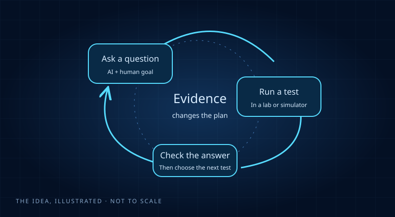

163 reports & updates · Channel coverage through October 30, 2026

THE BIG IDEA
AI can suggest the next question. Evidence still gets the final say.
Start here · Medicine & biology
Unhooking an allergy trigger
Think of an allergy trigger clipped to an immune cell. Researchers used AI to design tiny helpers that might unclip it. Some worked in laboratory tests.
The important distinction: those helpers are starting pieces—not a finished allergy treatment.
A visual analogy, not a literal molecular diagram.
Curiosity, with the brakes working
A claim is the beginning. Checking is the journey.
Early result
The team has reported something promising. Other groups may not have checked it yet. A preprint is a research paper shared before journal review.
Lab test ≠ treatment
A molecule doing a job in a test is an early step. It says nothing by itself about safety or benefit in people.
Computer check ≠ every claim checked
A proof checker checks an exact mathematical statement. A separate written explanation can still contain errors or make a different claim.
AI contribution ≠ no humans
People often choose the question, build the tools, run experiments and repair arguments. Open each story to see the division of work.
Stories are dated by when the channel covered them. The original research may be earlier. Follow-ups and corrections remain visible rather than quietly disappearing.
The discovery notebook
Explore the ideas
Edited October 31, 2026
163 source-linked reports and updates
No science degree required. Questions welcome.
No discoveries match that search. Try a broader word or clear the filters.
Think of turning a patterned tile: some moves leave its pattern unchanged. This work tackles an abstract version of how such symmetries can be described. A mathematician and AI built a proposed proof together; other experts still need to check it.
AI used in this research (source-reported)GPT Astra helped find proofs and draft the paper; the exact version was not disclosed.
What happened, who did what & the limits
Harvard mathematician Mark Kisin reports a proof completing Serre’s 1960 prediction about how symmetries can be represented in algebra. Earlier proofs covered other settings; this paper tackles the remaining case. Kisin says GPT Astra helped find the proofs, as well as draft the paper, and that substantial human work went into checking and refining the arguments. Early, author-checked preprint—not independently confirmed: the exact Astra version is not specified, and this was a human–AI collaboration, not an autonomous discovery.
This is the source-channel account at the time it was shared. An early report is not a guarantee the claim will stand.
Imagine a researcher choosing where to look on an unfamiliar map. This AI picked experiments in a simulated chain of particles and used the answers to decide where to look next. It recovered much of a known map, but missed a region—not a discovery of new matter.
AI used in this research (source-reported)GPT-5.6-Luna powered QuantumMatterExplorer’s simulation planning and follow-up calculations.
What happened, who did what & the limits
ETH Zürich researchers built QuantumMatterExplorer, which chose what to measure, ran simulations, checked results with a second calculation method and adjusted its investigation. In an eight-hour study driven by GPT-5.6-Luna, it recovered much of an existing map of how a simulated chain of quantum particles changes behavior. Humans supplied the equations, parameter ranges, software and expert-written guidance; the AI selected the measurements and follow-up calculations. Early autonomous-research demonstration—not a newly discovered state of matter: it missed one known state, left regions unresolved and did not reliably locate the boundaries between states. These are author-reported preprint results, not independent replication.
This is the source-channel account at the time it was shared. An early report is not a guarantee the claim will stand.
A medicine sometimes needs to grip a particular molecule, like a key fitting a lock. AI and scientists redesigned two small protein pieces to grip their targets more tightly in lab tests. A better grip is useful, but does not yet make a safe or effective medicine.
AI used in this research (source-reported)Claude helped redesign antibody fragments and analyze results; the exact version was not disclosed.
What happened, who did what & the limits
Claude and BigHat researchers redesigned two antibody fragments—building blocks that could go into future medicines. Across about 1,010 lab-tested variants, the best versions reportedly bound their targets over ten times more tightly. When the team suspected its usual measurements were misleading, Claude and an Anthropic researcher reanalyzed the raw data and proposed revised measurements and a follow-up experiment; BigHat scientists refined and ran it, with the main predictions reportedly borne out. Early lab result—not independently confirmed: people set the goals and ran the experiments, the exact Claude version was not disclosed, and this is not evidence of a safe or effective drug.
This is the source-channel account at the time it was shared. An early report is not a guarantee the claim will stand.
An engineered immune cell has a sensor outside and an instruction switch inside. Researchers used AI to help shrink the switch, leaving more room in its genetic instructions. The cells performed better in laboratory tests; success in people has not been shown.
AI used in this research (source-reported)Claude Opus 4.7 and 4.8 helped interpret results and refine designs. Several models proposed initial designs; they were not all named.
What happened, who did what & the limits
Generate Biomedicines used AI to redesign the internal signaling section of CAR-T cells—immune cells engineered to recognize cancer. In lab tests, a version less than one-third the usual length supported higher levels of the cancer-recognizing sensors and longer-lasting cancer-cell killing. Scientists set the goals and ran three rounds of experiments; several models proposed initial designs, while Claude Opus 4.7 and 4.8 helped interpret results and refine them. Early technical report—not independently confirmed: these are cell experiments, not evidence that a new treatment is safe or effective in patients.
This is the source-channel account at the time it was shared. An early report is not a guarantee the claim will stand.
Picture an alarm trigger clipped to an immune cell. Researchers used AI to design molecular pieces that might help unclip it. Some pieces worked in lab tests, but the pieces still need to become a complete medicine and be tested for safety.
AI used in this research (source-reported)Claude helped plan and run the computer-design campaign; the exact version was not identified in the report.
What happened, who did what & the limits
Divergence Labs worked with Claude to design molecules that could detach IgE, a protein involved in allergic reactions, from its attachment site. Claude helped plan the research and largely ran the computer-design campaign, with ongoing human guidance; researchers made and tested the candidates. In protein-binding assays, 20 of 91 tested designs showed the desired effect, and three removed more IgE than the approved drug omalizumab in that specific test. Early preprint—not independently confirmed: these are separate candidate components, not a finished treatment, and the experiments do not establish benefit or safety in patients.
This is the source-channel account at the time it was shared. An early report is not a guarantee the claim will stand.
Picture several ripples meeting and briefly making a taller splash. The proposed proof puts limits on how long ideal mathematical waves can stay tightly concentrated. It is a claim about equations, not a new way to stop ocean waves.
AI used in this research (source-reported)An OpenAI research model supplied the proof; its identity was not disclosed. Lean is the proof checker, not the AI model.
What happened, who did what & the limits
OpenAI says its research AI found a proof explaining why the most extreme focusing of idealized waves must be short-lived, in any number of dimensions. The claimed result would also settle major related questions about shapes containing a line segment pointing in every direction. The AI supplied the proof; OpenAI organized the computer checking and release, but did not name the model or fully describe the human guidance. Early claim—OpenAI reports Lean computer checks, not independent acceptance: the proof and its stated scope are public for researchers to examine.
This is the source-channel account at the time it was shared. An early report is not a guarantee the claim will stand.
Some puzzles seem to require a search that balloons as more pieces are added. OpenAI reports an AI-made mathematical shortcut that would overturn one major assumption about that growth. Experts are examining it; this does not mean ordinary computers suddenly solve every hard problem.
AI used in this research (source-reported)An OpenAI research model generated the argument; its identity was not disclosed. Lean was used for reported formal checks.
What happened, who did what & the limits
OpenAI says its research AI found an algorithm that would overturn the Exponential Time Hypothesis—a widely used assumption about how quickly certain logical puzzles can be solved. The AI generated the argument, and OpenAI reports checking a formal version with Lean; the exact model and full human guidance were not disclosed. An external group led by Russell Impagliazzo, Ramamohan Paturi and Ryan Williams is examining and explaining the work. Public proof claim—not yet independent consensus: it does not settle P versus NP or demonstrate faster everyday software.
This is the source-channel account at the time it was shared. An early report is not a guarantee the claim will stand.
Anthropic reports a separate AI-generated route to the same surprising computing claim. A second route is interesting, but it is not the same as independent people confirming the first route. Neither claim promises an immediate speed boost for your computer.
AI used in this research (source-reported)An internal Claude research model found the core algorithm; its exact identity/version was not disclosed.
What happened, who did what & the limits
Anthropic has released a separate proposed disproof of the Exponential Time Hypothesis, the computing assumption in the OpenAI report above. It says an internal Claude research model found the core algorithm without human input on October 16; people later helped improve the presentation. AI-generated proof claim with reported computer checks: Anthropic reports checks by Lean and a separately built checking program, but its paper says no person was known to have checked the formal proof at publication. This is a claimed independent discovery—not independent human confirmation—and it neither settles P versus NP nor offers a practical speedup.
This is the source-channel account at the time it was shared. An early report is not a guarantee the claim will stand.
A recipe-following robot stops when something unexpected happens. This system used a camera and AI to inspect simple experiments, choose extra tests and recover from some disruptions. People built the lab and set the tasks; it did not discover a new biological fact.
AI used in this research (source-reported)GPT-5.6 Terra powered PEARL’s planning and analysis of robot-lab tests.
What happened, who did what & the limits
PEARL used GPT-5.6 Terra, a camera and a liquid-handling robot to plan tests, inspect results and revise its approach. Across eight simple lab scenarios, it devised extra tests, recovered from deliberate disruptions and measured a familiar enzyme’s activity. Duke researchers built and calibrated the setup, supplied goals and general scientific guidance, and designed the scenarios—but did not supply step-by-step recovery instructions. Early preprint—not independently confirmed: this is progress toward adaptable robot labs, not a new biological discovery or a fully autonomous scientist.
This is the source-channel account at the time it was shared. An early report is not a guarantee the claim will stand.
Short pieces of DNA can fold into shapes that cling to particular proteins. AI revised those shapes after people tested them in a lab. It learned from misleading results, but the strongest hooks still built on known designs.
AI used in this research (source-reported)Gemini Pro and Flash agents designed DNA candidates and analyzed lab feedback; exact model versions were not specified in this account.
What happened, who did what & the limits
Gemini Pro and Flash agents designed short DNA strands meant to stick to selected proteins, then revised their strategy using three rounds of real lab tests. They diagnosed misleading results from overly sticky molecules and changed designs, improving the final batch’s success rate for both main targets. Humans chose the targets, built the AI workflow and performed the lab work; the agents handled molecular design and between-round analysis. Early preprint—tested by the authors, not independently replicated: the strongest binders adapted known designs, entirely new ones bound more weakly, and no medical benefit was demonstrated.
This is the source-channel account at the time it was shared. An early report is not a guarantee the claim will stand.
AI helped researchers construct examples that improve records in a mathematics puzzle first posed in 1933. Think of finding a better score under very strict game rules. A record-setting example is progress, not a complete solution to every case.
AI used in this research (source-reported)Gemini, including internal Gemini 4 Argon, built mathematical search tools; not every participating version was named.
What happened, who did what & the limits
Google DeepMind researchers worked with Gemini, including internal Gemini 4 Argon, to find new examples of equations with unusually low mathematical complexity. The AI built and ran search tools; people helped reshape the search and turn its patterns into a general construction. The team reports improving six published records and extending the search through degree 2,000. Computationally checked by the team—not a solution to Lehmer’s full conjecture.
This is the source-channel account at the time it was shared. An early report is not a guarantee the claim will stand.
If someone says every swan is white, one black swan is enough to prove them wrong. Here, a human–AI team found a mathematical exception to a long-standing prediction about quantum systems. This is a proof claim, not a new particle seen in a laboratory.
AI used in this research (source-reported)ChatGPT suggested the crucial adjustment; the underlying model/version was not specified.
What happened, who did what & the limits
Simon Becker and Mengxuan Yang construct a mathematical setting where quantum waves behave differently from Barry Simon’s prediction, in two or more dimensions. They credit ChatGPT with the crucial adjustment and its extension across the full range of positive energies; they then thoroughly rewrote the proof. Early human–AI proof claim—not independently confirmed: this is a theoretical counterexample, not a laboratory experiment, and the model version is unspecified.
This is the source-channel account at the time it was shared. An early report is not a guarantee the claim will stand.
Imagine a surface building up unevenly as tiny random events keep nudging it. AI contributed key steps to the mathematics describing one such model. This improves the theory of an idealized system, not a prediction for every growing surface.
AI used in this research (source-reported)ChatGPT 5.5, 5.6 and 6 helped derive bounds and complete the argument; more specific variants were not reported.
What happened, who did what & the limits
Eleven researchers construct a precise mathematical description of a randomly growing surface at a difficult two-dimensional transition point. ChatGPT 5.5, 5.6 and 6 helped derive crucial bounds, complete the limiting construction and show that its fluctuations do not follow the familiar bell curve. People supplied the framework, guided the work and rejected an earlier argument after finding a gap. Author-checked preprint: a carefully defined critical-limit result, not a general smooth solution of every random-growth equation.
This is the source-channel account at the time it was shared. An early report is not a guarantee the claim will stand.
Some scientific calculations fail because tiny rounding errors grow into big mistakes. Claude suggested fixes to a difficult numerical method that researchers had repeatedly set aside. The work is about making a specific calculation reliable, not eliminating all computer errors.
AI used in this research (source-reported)Claude Code proposed fixes. That names the coding tool, not its underlying model, which was not specified here.
What happened, who did what & the limits
A team including James Demmel reports a reliable, fast implementation of a method for breaking large number grids into simpler components—a basic scientific-computing task. Claude Code proposed several important fixes after diagnosing failed tests, while a human expert supplied mathematical constraints and checked the changes against the theory. The team reports accuracy tests, speed comparisons and integration into the LAPACK codebase. Tested by the authors: some especially difficult test cases still lose accuracy. This makes an existing algorithm usable; it is not new mathematical theory or a speedup on every problem.
This is the source-channel account at the time it was shared. An early report is not a guarantee the claim will stand.
Imagine several chemical ingredients repeatedly changing into one another. Two AI systems helped develop and computer-check an argument about when a particular mathematical network settles into steady behavior. It is a statement about a model, not a new chemical reaction tested in a beaker.
AI used in this research (source-reported)Claude Opus 5.5 selected strategies; GPT-6 Astra wrote arguments and the computer-checkable proof within ClawsGO Science.
What happened, who did what & the limits
The ClawsGO Science research system gives a new proof route for why a specified class of chemical-reaction models settles into equilibrium. Claude Opus 5.5 chose key strategies; GPT-6 Astra wrote the arguments and computer-checkable proof, while people directed and reviewed the work. The authors report that Lean checked the formal steps, including adapted material from OpenAI’s earlier work. Research-capability demonstration on known mathematics—not discovery of a new chemical law; the formal checks were not independently rerun here.
This is the source-channel account at the time it was shared. An early report is not a guarantee the claim will stand.
Gravitational waves are tiny stretches and squeezes of space. AI helped develop a program that searched for better detector layouts in a simulator. It beat the study’s comparison methods, but no physical detector was built or tested.
AI used in this research (source-reported)GPT-6 Astra and Claude Fable 5.1 helped develop the search program. Final tests ran that fixed program, not a model steering live experiments.
What happened, who did what & the limits
ADAPT for Science uses AI agents to revise how a computer searches for detector designs, learning from earlier designs and failed attempts. Its development pool used GPT-6 Astra and Claude Fable 5.1; the resulting fixed program beat the study’s comparison methods on eight unseen simulated detector layouts. People supplied the physics simulator, constraints and evaluation rules. Early simulation result: no detector was built or tested, and the final test runs used the evolved program—not an AI continually steering an experiment.
This is the source-channel account at the time it was shared. An early report is not a guarantee the claim will stand.
A computer must decide how to turn a stored scene into the picture you see. An AI research pipeline proposed and tested changes to that process. Its reported gains apply to the tested setting, not every game or graphics program.
AI used in this research (source-reported)SplatLab is the research system; its underlying model was not identified in this account.
What happened, who did what & the limits
UC San Diego’s SplatLab reads prior work, proposes changes, trains them, checks results and writes up the findings, with reported numbers tied to saved training runs. The authors report image-quality improvements over the reproduced methods, including a test involving nebula images. People built the specialized framework, supplied reliable starting implementations and defined its testing environment. Computational research-capability demonstration—not independently replicated: it is narrowly engineered for 3D graphics, not evidence of a general autonomous scientist.
This is the source-channel account at the time it was shared. An early report is not a guarantee the claim will stand.
Think of a surface that might remain gently curved or develop a sharp trouble spot. AI supplied ideas for proving what happens in one particular family of equations. The result has precise conditions; it does not cover all shapes.
AI used in this research (source-reported)GPT-6 Astra suggested key proof techniques during discussions with the researchers.
What happened, who did what & the limits
Guohuan Qiu and Jin Yan prove that a family of solutions to nonlinear equations stays smooth all the way to the edge of certain curved regions. They say GPT-6 Astra suggested most of the proof’s key zoom-in techniques during a month of discussion. The researchers supplied the motivating observations and checked the proofs. Author-checked preprint—not independently confirmed: the result applies to specific equations and strictly curved, smooth boundaries, not arbitrary shapes.
This is the source-channel account at the time it was shared. An early report is not a guarantee the claim will stand.
A rounded room and a room with sharp corners do not constrain waves in exactly the same way. An AI proof idea helped establish limits for an ideal mathematical version of this effect. It is not a new speaker or acoustic treatment.
AI used in this research (source-reported)ChatGPT 6 Astra suggested the initial proof mechanism; humans substantially reworked it.
What happened, who did what & the limits
Jeffrey Galkowski and Ruoyu Wang establish sharp limits for a family of boundary-driven patterns on shapes with one corner. ChatGPT 6 Astra suggested the initial proof mechanism; the researchers supplied the comparison setup, simplified the approach and extended the argument. Early human–AI mathematical result: the final proof was substantially reworked by the authors and applies to a restricted family of shapes.
This is the source-channel account at the time it was shared. An early report is not a guarantee the claim will stand.
Quantum teleportation transfers a quantum state—not a person or an object. AI proposed a simpler mathematical protocol for a specific setting. A proposed recipe is not the same as building working hardware.
AI used in this research (source-reported)ChatGPT Astra supplied the central protocol; the exact version was not specified.
What happened, who did what & the limits
Anurag Anshu and Quynh Nguyen describe a new way to transfer a quantum state using pre-shared entanglement and a classical message, with a simpler theoretical circuit. They credit ChatGPT Astra with the central protocol after the researchers suggested the starting ideas; people rewrote and checked the presentation. Unreviewed theoretical result—not a hardware demonstration: it requires substantial shared resources and does not enable faster-than-light communication.
This is the source-channel account at the time it was shared. An early report is not a guarantee the claim will stand.
Mathematicians often learn a rule in one number system, then ask whether it survives in a more complicated one. Humans adapted an earlier AI-assisted proof strategy to that wider setting. The scope is still limited by the paper’s assumptions.
AI used in this research (source-reported)Claude produced an initial argument from the author’s ideas and source papers; its exact version was not specified.
What happened, who did what & the limits
William Banks extends work associated with OpenAI’s recent proof claim to broader systems of numbers, obtaining explicit bounds that earlier theorems did not provide. He supplied the key ideas and source papers; Claude produced an initial argument, which he says he checked line by line and rewrote. Author-checked preprint—not independent consensus: this is a new extension of the earlier work, not another announcement of the original claim.
This is the source-channel account at the time it was shared. An early report is not a guarantee the claim will stand.
Think of an elaborate set of route instructions rewritten so another person can follow every turn. A human researcher reworked parts of an AI proof about networks. This is a follow-up to the earlier claim, not a separate discovery of the same result.
AI used in this research (source-reported)The original proof is credited to an unnamed OpenAI model. This follow-up is the mathematician’s reworked argument.
What happened, who did what & the limits
Zhentao Li presents a human-readable version of OpenAI’s proposed proof that certain flat network diagrams always contain a loop visiting every point exactly once. He replaces part of the AI-generated argument with more direct reasoning and presents a stronger version that can avoid any chosen connection. External, human-reworked preprint—not final community acceptance: this is follow-up scrutiny of one proof, not verification of OpenAI’s whole collection.
This is the source-channel account at the time it was shared. An early report is not a guarantee the claim will stand.
Place evenly spaced dots inside a round region and ask how many fit. Researchers derived a sharper estimate using an AI-related mathematical claim as an assumption. If that supporting claim fails, the new estimate loses its guarantee.
AI used in this research (source-reported)The added improvement depends on an earlier OpenAI proof claim whose model was not named; the counting argument is human-developed.
What happened, who did what & the limits
Chiara Bellotti and Bryce Kerr improve estimates of how many whole-number grid points fit inside a sphere. Their human-developed argument becomes slightly stronger when combined with OpenAI’s recently claimed number-theory result. Conditional follow-up preprint: the extra improvement depends on that AI-associated claim; using it does not independently verify it, and the underlying counting work is the human authors’ contribution.
This is the source-channel account at the time it was shared. An early report is not a guarantee the claim will stand.
A sequence can look convincing for thousands of terms and still break the supposed rule later. Claude helped a researcher prove some open claims and find exceptions to others. The researcher directed and checked the work; these are author-reported results.
AI used in this research (source-reported)Claude developed arguments and checking code under human direction; its exact version was not specified.
What happened, who did what & the limits
Roberto Blanco Gómez reports proofs of 33 statements listed as unresolved in a major number-pattern catalogue, plus counterexamples to three conjectures. Under his direction, Claude found and wrote the arguments and a checking program; he chose the scope and takes responsibility for the report. Early, author-reported mathematics: most arguments use familiar methods, and the paper separately identifies claims already settled elsewhere. Its numerical checks are not independent confirmation or computer-certified proofs.
This is the source-channel account at the time it was shared. An early report is not a guarantee the claim will stand.
Imagine asking how complicated a curve must be to visit a demanding set of locations. An expert unpacked and simplified an AI proof for one highly specific version of that question. It does not apply to every possible arrangement of points.
AI used in this research (source-reported)ChatGPT Astra helped with editing and illustrations in this follow-up. The model behind OpenAI’s original proof was not identified here.
What happened, who did what & the limits
Jenia Tevelev gives a simplified account of OpenAI’s proof of Nagata’s conjecture: how complicated an algebraic curve must be to pass repeatedly through many very generally placed points. The original argument came from OpenAI’s model; Tevelev reorganized and expanded it, using ChatGPT Astra for editing and illustrations. New expert examination—not yet journal-reviewed: this does not cover arbitrary point arrangements or independently validate OpenAI’s other proofs.
This is the source-channel account at the time it was shared. An early report is not a guarantee the claim will stand.
A mathematical rule was supposed to give certain abstract structures a well-behaved companion. Researchers explain exceptions and extend an AI-linked argument. This builds on human work too, and is not an AI-only claim of priority.
AI used in this research (source-reported)An unnamed OpenAI model supplied an earlier key argument; the extension and new connections are human work.
What happened, who did what & the limits
Cristian Anghel explains and extends counterexamples to a 1973 conjecture about whether certain algebraic systems always have a better-behaved companion structure. OpenAI supplied a key argument; Anghel connects it to earlier human work and carries it into higher dimensions. Human proof follow-up, still a preprint: the paper notes an overlapping human claim, so this is not an AI-only priority claim.
This is the source-channel account at the time it was shared. An early report is not a guarantee the claim will stand.
Imagine dividing a scattered cluster of dots into four smaller groups. AI-assisted searching helped find 101 points that defeat a proposed limit. That refutes the specific prediction—not every broader question about dividing shapes.
AI used in this research (source-reported)GPT-6 Astra suggested mathematical search methods; the researcher supplied the construction and checking procedure.
What happened, who did what & the limits
Vsevolod Voronov reports 101 points in ordinary three-dimensional space that are harder to divide into four small groups than a sphere is. That contradicts Gale’s proposed limit. GPT-6 Astra proposed some of the search methods; the researcher directed the investigation and supplied the construction and checking procedure. Early computer-supported result: this is a specific partitioning question, not a disproof of the broader three-dimensional Borsuk conjecture.
This is the source-channel account at the time it was shared. An early report is not a guarantee the claim will stand.
Imagine clubs whose members overlap from club to club. AI found an arrangement that violates a proposed mathematical limit on such collections. The human researcher presented it and separately proved another bound.
AI used in this research (source-reported)ChatGPT 6.1 Sol found the counterexample; the separate stronger bound is the researcher’s work.
What happened, who did what & the limits
ChatGPT 6.1 Sol found a construction that contradicts a proposed limit for collections of groups that all overlap. Balázs Patkós presents it and separately proves a stronger bound on what is possible. Early human–AI mathematical result: the counterexample is credited to the model, while the separate bound is the researcher’s work; independent confirmation is not established here.
This is the source-channel account at the time it was shared. An early report is not a guarantee the claim will stand.
Just as a field guide groups animals by shared features, mathematicians classify shapes by properties they have in common. AI helped develop arguments for one broad family defined by equations. The human researcher chose the questions and checked the proofs.
AI used in this research (source-reported)GPT-5.6 Sol generated many ideas and proof arguments; GPT-6 Sol helped revise them.
What happened, who did what & the limits
Kiwamu Watanabe classifies a broad family of shapes defined by algebraic equations and proves gaps in the values their complexity can take. He says GPT-5.6 Sol generated most proof arguments and many central ideas, with GPT-6 Sol helping revise them. He chose the questions, directed the work, corrected errors and checked the final proofs. Author-checked preprint—not independently confirmed.
This is the source-channel account at the time it was shared. An early report is not a guarantee the claim will stand.
A proof can need one crucial supporting step before the whole argument works. Claude supplied such a step in a question about which basic rules mathematics needs. It did not discover the already-known pattern theorem from scratch.
AI used in this research (source-reported)Claude Opus 5.5 proved a core supporting step; the overall approach and final rewrite are human work.
What happened, who did what & the limits
Ludovic Patey answers a long-standing question about which basic mathematical rules are needed for an infinite-pattern theorem. Claude Opus 5.5 proved a core supporting step; Patey supplied the overall approach and rewrote that proof for clarity. Early mathematical result: the AI contribution is a specific central step, not the entire theorem or a new discovery of the already-known pattern theorem.
This is the source-channel account at the time it was shared. An early report is not a guarantee the claim will stand.
Imagine showing that you solved a puzzle while keeping your solution hidden. AI helped develop shorter theoretical proofs for a restricted version of that idea. The enormous mathematical overhead means this is not ready-to-use security software.
AI used in this research (source-reported)Claude developed constructions and arguments under the authors’ direction; its exact version was not specified.
What happened, who did what & the limits
Inhyuk Park and Chenglin Fan describe theoretical proofs that can be checked by inspecting a few pieces without revealing the underlying solution, within a specified limit on how much a checker reads. They improve how proof length grows, crediting Claude, under their direction, with developing constructions and arguments throughout the paper. Author-checked preprint: it uses a qualified version of the earlier problem’s requirements and enormous hidden constants—not a ready-to-use security tool.
This is the source-channel account at the time it was shared. An early report is not a guarantee the claim will stand.
Researchers wanted to connect branching diagrams with regular arrangements of points. AI produced an initial argument; people removed an unnecessary detour and strengthened it. The important surviving idea mattered more than preserving the original AI wording.
AI used in this research (source-reported)ChatGPT 5.5 Pro and Claude Opus 4.8 produced the initial proof; humans strengthened and rewrote it.
What happened, who did what & the limits
Researchers resolve a question connecting tree-shaped diagrams with weighted points to regular grids of points. ChatGPT 5.5 Pro and Claude Opus 4.8 produced an initial proof; a key AI-proposed step survived after the human authors removed an unnecessary detour and strengthened the argument. Human-reworked preprint—not independent journal confirmation: the final proof is not the original AI output unchanged.
This is the source-channel account at the time it was shared. An early report is not a guarantee the claim will stand.
Think of a puzzle grid whose rows and columns must obey exact arithmetic rules. AI-assisted searches supplied arrangements missing from a mathematical catalogue. The contribution is specific new constructions, not a method for solving every grid puzzle.
AI used in this research (source-reported)Claude Opus 5.5 built search and construction programs; humans analyzed the results and checked the mathematics.
What happened, who did what & the limits
Four mathematicians report new constructions of square grids of plus and minus ones whose rows balance perfectly against one another, including a grid 5,788 entries wide. Claude Opus 5.5 built search and construction programs; the people analyzed the results, rewrote arguments and report exact arithmetic checks. Computationally checked by the team: some other sizes were independently rediscovered, and the general existence conjecture remains open.
This is the source-channel account at the time it was shared. An early report is not a guarantee the claim will stand.
An AI-proposed construction gave people a starting point for a new algebraic counterexample. The researchers changed it and supplied further reasoning. One important class of cases remains open, so this is not a universal answer.
AI used in this research (source-reported)An unreleased OpenAI model supplied an earlier construction; its identity was not disclosed. Humans developed this new counterexample.
What happened, who did what & the limits
Jananan Arulseelan and James Hanson give a counterexample to a long-standing expectation about limits inside certain infinite algebraic systems. They modified a construction credited to an unreleased OpenAI model, then added their own reasoning to obtain the new result. Human-developed preprint: the model’s identity and original guidance are unspecified, and an important remaining class of systems is still unresolved.
This is the source-channel account at the time it was shared. An early report is not a guarantee the claim will stand.
An enzyme is a protein that helps a chemical reaction happen. AI designed candidate enzymes, and scientists made and tested them. One helped with a step used to make a drug ingredient; that is not the same as producing the whole medicine.
AI used in this research (source-reported)RFD4-Proteina generated protein designs; people set chemical goals and made and tested the proteins.
What happened, who did what & the limits
RFD4-Proteina, from the University of Washington and NVIDIA, designed proteins that perform useful chemical reactions. One design helped make a building block for the HIV-prevention drug lenacapavir, converting 79% of the intended starting material in a laboratory test; other designs broke down a pesticide. People supplied the chemical goals and active-site requirements, screened candidates, and made and tested the proteins; the model supplied the designs. Early laboratory results reported by the team—not independently replicated: this demonstrates one drug-making step, not complete drug production or cheaper manufacturing.
This is the source-channel account at the time it was shared. An early report is not a guarantee the claim will stand.
A metal contains small crystal regions that meet at boundaries. AI organized computer experiments to investigate why some boundaries were especially hard to slide. The proposed atomic explanation still needs a physical experimental check.
AI used in this research (source-reported)GPT-5.6 Sol and Luna powered GBClaw’s simulation work and analysis.
What happened, who did what & the limits
GBClaw, using GPT-5.6 Sol and Luna, organized simulations of 14 boundaries between nickel crystals and adapted its calculations to investigate their behavior. Follow-up work linked unusually strong resistance to particular temporary atomic arrangements. Humans chose the research setting, supplied scientific tools, added comparison cases and guided the investigation of the unusual result. Early simulation-based research demonstration: the calculations use idealized conditions, and the proposed explanation has not been confirmed in a physical experiment.
This is the source-channel account at the time it was shared. An early report is not a guarantee the claim will stand.
A specialist studied an earlier AI argument, corrected errors and reported a stronger result about a function linked to prime numbers. Think of checking a difficult bridge design bolt by bolt. This does not prove the famous Riemann hypothesis or validate the original write-up unchanged.
AI used in this research (source-reported)Claude supplied the original proof approach; the exact version was not specified. This report is a human expert’s repaired argument.
What happened, who did what & the limits
Juan Arias de Reyna reports that a month of study convinced him of a corrected version of Claude’s earlier proof: at least 67.25% of certain points where the Riemann zeta function equals zero lie on the predicted line. This improves a previously proved proportion, but does not prove the Riemann hypothesis. Claude supplied the original approach; the mathematician checked, repaired and rewrote the argument, while the model version and original human guidance are not specified here. One specialist’s reported validation, with corrections: he says the original written proof contained invalid statements, so this is not blanket confirmation of its original write-up or computer-proof files.
This is the source-channel account at the time it was shared. An early report is not a guarantee the claim will stand.
Two halves of an ideal chain of particles can share information in subtle ways. Human–AI work found an example outside a proposed classification. That shows one simple measure misses something—not that a new device has been built.
AI used in this research (source-reported)GPT-5.6 Sol and Claude Opus 5.5 helped find the counterexample and develop proof ideas.
What happened, who did what & the limits
Researchers describe idealized infinite chains of particles whose two halves have mathematical forms of shared quantum information outside a previously proposed classification. The counterexample answers a question raised in 2006 and shows why a simple measure of shared information cannot fully describe that structure. GPT-5.6 Sol and Claude Opus 5.5 helped discover the counterexample and develop proof ideas; humans refined and checked the arguments and supplied further physical-locality results. Early mathematical result checked by its authors: this is not a laboratory observation or an independently confirmed proof.
This is the source-channel account at the time it was shared. An early report is not a guarantee the claim will stand.
Many computer tasks involve multiplying tables of numbers. Researchers and AI found improved mathematical ways to handle particular batches of these operations. The paper does not show that everyday software now runs faster.
AI used in this research (source-reported)Gemini, ChatGPT and Claude contributed constructions, corrections and analysis; exact model versions were not specified in this account.
What happened, who did what & the limits
Edgar Solomonik and Markus Bläser present new ways to multiply several grids of numbers together with fewer arithmetic steps, improving mathematical bounds for fixed groups of these calculations. Humans supplied the original approach; Gemini, ChatGPT and Claude helped develop new constructions, corrections and analysis of numerical accuracy. Early human–AI mathematical result: it does not beat the best overall theoretical matrix-multiplication record, and the paper does not demonstrate a speedup in everyday software. Its possible practical value remains to be tested.
This is the source-channel account at the time it was shared. An early report is not a guarantee the claim will stand.
A very small program can be surprisingly hard to predict. AI found rules describing eleven particular programs. That helps with those cases, not with predicting what every possible program will do.
AI used in this research (source-reported)Gemini 3.1 Pro and a later Gemini 3.8 Flash research stage proposed rules and proofs; Lean checked the formal steps.
What happened, who did what & the limits
Google DeepMind’s system found compact rules describing how eleven previously unexplained tiny programs behave. Gemini 3.1 Pro, with a later Gemini 3.8 Flash research stage, proposed rules and produced proofs checked with Lean, a mathematical proof-checker. Humans built the tools, selected the search setting and checked the final statements. Preprint with reported computer-checked proofs: whether these programs eventually stop remains unknown; this does not solve the general halting problem.
This is the source-channel account at the time it was shared. An early report is not a guarantee the claim will stand.
Some codes mark positions so that a reader can distinguish where it is despite errors. AI extended a family of especially efficient constructions. The claim is about a particular coding problem, not a universal fix for lost data.
AI used in this research (source-reported)Claude found the construction and wrote proofs; Codex and other AI-written programs added checks. The underlying model versions were not specified.
What happened, who did what & the limits
A new paper constructs longer optimal binary patterns of a kind used to represent position in rotary sensors. Under Christopher Dzoba’s direction, Claude found the key construction and wrote proofs; separate AI-written programs and Codex supplied additional checks. The result reaches every odd prime length through 47; extending it to all prime lengths still depends on an unproved assumption. Preprint with reported computer checks and a partly computer-checked proof—not a new sensor tested in hardware.
This is the source-channel account at the time it was shared. An early report is not a guarantee the claim will stand.
Fusion researchers use equations to describe how hot charged gas might balance inside magnetic fields. This follow-up broadens an earlier mathematical result. It is not a demonstration of a working power plant.
AI used in this research (source-reported)Gemini 4 Argon helped extend the earlier plasma solutions; the researchers independently re-derived the calculations.
What happened, who did what & the limits
Gemini 4 Argon helped extend two previously reported mathematical arrangements of hot plasma by removing an extra symmetry restriction. The new exact solutions give scientists more varied test cases for fusion-simulation software—not a demonstrated improvement to a reactor. Opal Issan, Jonathan Citrin, Matt Landreman and Brendan Tracey chose the problem, guided the agents and independently re-derived the calculations. Preprint, author-checked: this extends the earlier result; it is not the first disproof of the old conjecture.
This is the source-channel account at the time it was shared. An early report is not a guarantee the claim will stand.
A detector can miss a signal if its checking method is built around the wrong assumptions. An AI-suggested example revealed a limitation in one mathematical wave-detection setting. It does not mean every real detector is unreliable.
AI used in this research (source-reported)The authors credit an AI tool with suggesting the counterexample but do not identify its model.
What happened, who did what & the limits
A new proof shows that a standard geometric rule for observing waves can fail completely when conditions change with time: a nonzero mathematical wave can remain invisible in the observation region. Zhonghua Liao, Qi Lü and Xu Zhang say an AI tool suggested the counterexample; they developed and checked the work within a long-running human project. Early proof claim—not independently confirmed: the AI model is unnamed, and this is a result about a specific mathematical wave equation, not a physical sensor experiment.
This is the source-channel account at the time it was shared. An early report is not a guarantee the claim will stand.
Mathematicians try to organize the different ways abstract objects can keep their form under change. AI helped remove an obstacle in one classification problem. The result belongs to a precise mathematical setting, not all kinds of symmetry.
AI used in this research (source-reported)GPT6-Astra helped open a new approach and refine key proof reductions.
What happened, who did what & the limits
Zhilin Zhang reports a proof that only two kinds of symmetry group satisfy a particular rule about rearranging sets of points. GPT6-Astra helped open a new line of thought when the project had stalled and helped refine key reductions; Zhang checked the mathematics and takes responsibility for it. Early proof claim—not independently confirmed: the classification has specific assumptions and does not cover every symmetry group.
This is the source-channel account at the time it was shared. An early report is not a guarantee the claim will stand.
An AI suggestion helped researchers strengthen a mathematical estimate connected to simulation. Think of putting a tighter fence around the range of possible answers. The gain is in the proof’s guarantee, not an established everyday speedup.
AI used in this research (source-reported)ChatGPT suggested adapting an older proof technique; Claude helped refine constants. Exact model versions were not specified.
What happened, who did what & the limits
A new paper improves mathematical guarantees for approximating how diffusion behaves in highly uneven materials. ChatGPT identified an older proof technique and suggested adapting it; Moritz Hauck, Chupeng Ma and Daniel Peterseim combined their approaches and checked the arguments, with Claude helping refine constants. Preprint—not independently confirmed: this is a shorter proof with sharper estimates and a related restricted result, not the first proof of every underlying claim or a tested speedup in an engineering product.
This is the source-channel account at the time it was shared. An early report is not a guarantee the claim will stand.
Imagine learning a city’s roads one connection at a time without storing the whole map. AI supplied a theorem that reduces memory for a restricted network-classification task. It is not a way to solve every network-coloring puzzle.
AI used in this research (source-reported)GPT Astra supplied the intermediate theorem; the exact version was not specified.
What happened, who did what & the limits
In Sergio Thoumi’s paper, GPT Astra supplied a theorem extending a network-analysis algorithm to use less memory while connections arrive one at a time. It distinguishes networks that can be colored with three labels from ones needing many more, under a promise that the input falls into one of those categories. Thoumi developed the surrounding work and revised the presentation. Early proof claim—not independently confirmed: this is a randomized mathematical decision method, not a general solution for coloring any network.
This is the source-channel account at the time it was shared. An early report is not a guarantee the claim will stand.
An optimization method tries to improve an answer step by step, like feeling your way downhill. AI found another example where a particular method fails to behave as hoped. The example does not show that all search methods fail.
AI used in this research (source-reported)AI generated the example, but the authors did not name the model.
What happened, who did what & the limits
AI generated a four-dimensional example in which the heavy-ball method, which uses momentum to search for a best answer, repeats a loop outside a previously studied pattern. The human authors checked the example and supplied the paper’s main analysis, including a separate result about one-dimensional problems. Preprint—not independently confirmed: their adviser independently found a similar example, and the paper does not name the AI model. This identifies a mathematical limitation, not a failure of every use of the method.
This is the source-channel account at the time it was shared. An early report is not a guarantee the claim will stand.
Some search methods are meant to restart when they go wrong. Human–AI counterexamples show a popular restart rule can remain asleep in certain mathematical settings. That is a limitation of the specified model, not proof every practical restart is broken.
AI used in this research (source-reported)GPT-6 helped construct the counterexample; no more specific variant was identified in the report.
What happened, who did what & the limits
Chenglong Bao, Jiahong Li and Defeng Sun constructed problems where a widely used rule for resetting an optimization method’s momentum never activates. GPT-6 helped develop the counterexample construction; the authors completed the mathematical arguments themselves. One example answers a 2016 question negatively for the continuous mathematical model. Preprint—not independently confirmed: it does not show that all restart rules or practical optimization runs fail.
This is the source-channel account at the time it was shared. An early report is not a guarantee the claim will stand.
AI proposed proteins shaped to attach to poisonous molecules from scorpions. Scientists examined the designs and tested candidates. A molecule that binds a toxin in a test is not automatically a safe antivenom for people.
AI used in this research (source-reported)An internal Claude research model ran the protein-design campaign; its exact identity/version was not disclosed.
What happened, who did what & the limits
An internal Claude research model ran a 64-hour design campaign, with an initial human prompt and four follow-ups. People chose the targets and supplied the tools; Claude chose structures, design strategies and candidates, and people added further candidates. Two contracted labs tested 211 designs: 17 met the study’s binding criteria against four toxins. Early laboratory result—not an antivenom: blocking venom damage has not been tested in cells or animals, and no design successfully bound multiple toxins.
This is the source-channel account at the time it was shared. An early report is not a guarantee the claim will stand.
Independent mathematical examination can do more than look for mistakes: it can reveal a simpler route. Researchers revisited an AI proof and strengthened the result. The source explains exactly which proof was checked, rather than treating all AI claims as confirmed.
AI used in this research (source-reported)An unnamed OpenAI model supplied the original proof ideas. This shorter, stronger proof is the human specialists’ work; the AI used to help read the originals was not identified here.
What happened, who did what & the limits
Four mathematicians report validating OpenAI’s proofs of Brennan’s conjecture, a long-standing question about how much a shape-preserving map can stretch near a boundary. They removed unnecessary arguments and obtained a stronger result with a much shorter proof. The original combination of ideas came from AI; the new proof and write-up are the human specialists’ work, with some AI help understanding the originals. Expert-checked update, in a preprint: this is substantial outside scrutiny, not a claim that the whole OpenAI collection is verified.
This is the source-channel account at the time it was shared. An early report is not a guarantee the claim will stand.
Picture flower petals that all meet at the same center but are otherwise separate. A sunflower conjecture asks when a large collection of sets must contain that kind of pattern. AI supplied a key proposed proof; the precise claim and checks are in the paper.
AI used in this research (source-reported)ChatGPT 6 Astra Pro found the key generalization after a focused human request.
What happened, who did what & the limits
A new paper proves a long-standing prediction about how large a collection of sets can become before a repeated overlap pattern must appear. ChatGPT 6 Astra Pro found the key generalization after people asked it to extend an existing argument; the authors checked and rewrote it. They report a Lean computer-checked proof, but its release was still forthcoming in the paper. Preliminary proof report: this is the Erdős–Szemerédi version, not every problem called the sunflower conjecture.
This is the source-channel account at the time it was shared. An early report is not a guarantee the claim will stand.
Imagine following a chain of linked points without branching. Human–AI work extended a mathematical guarantee to all lengths in the stated network setting. The guarantee still depends on the paper’s exact assumptions.
AI used in this research (source-reported)ChatGPT-6 Astra proved intermediate steps; the researcher supplied the overall strategy and extended those steps.
What happened, who did what & the limits
Tung H. Nguyen proves that networks missing a specified chain-shaped pattern must contain a fairly large group with either all possible connections or none. The result covers chains of every length, extending earlier special cases. Nguyen supplied the overall strategy and most ideas; ChatGPT-6 Astra proved important intermediate steps that he then extended and incorporated. New preprint: this settles the path case of the Erdős–Hajnal conjecture, not the full conjecture for every pattern.
This is the source-channel account at the time it was shared. An early report is not a guarantee the claim will stand.
Imagine reaching places while only being allowed to move in particular directions. AI helped build a mathematical example that defeats a prediction in such a setting. It is a specific counterexample, not a failure of geometry as a whole.
AI used in this research (source-reported)Claude Opus 5 and 5.5 generated the construction and initial proofs; ChatGPT-6 Astra reviewed them. Codex helped formalize the main theorems, with its underlying version unspecified.
What happened, who did what & the limits
A new nine-dimensional example overturns a remaining version of a prediction about the endpoints reachable by unusual, constrained paths. People set the strategy; Claude Opus 5 and 5.5 generated the detailed construction and initial proofs, with later ChatGPT-6 Astra review. The authors report complete Lean checks of the three main theorems, developed with Codex assistance; two additional appendices are not covered by those checks. Author-reported formal verification: the broader geometric problem was already partly disproved, and no local rebuild was performed for this digest.
This is the source-channel account at the time it was shared. An early report is not a guarantee the claim will stand.
Sometimes a rule fails generally but might still survive under extra restrictions. AI helped extend a known kind of exception into one of those restricted settings. This narrows where the old expectation can remain true.
AI used in this research (source-reported)ChatGPT-6 Astra proposed the finite-dimensional extension and helped develop proofs.
What happened, who did what & the limits
Researchers give new examples showing that certain local checks do not guarantee the behavior of an entire mathematical system. Earlier counterexamples were known; this paper reaches the commutative setting, where the relevant operations can be swapped without changing the answer. A human found the starting example, and ChatGPT-6 Astra proposed the finite-dimensional extension and helped develop proofs. New preprint: a separate, smaller AI-generated candidate remains unverified and is explicitly excluded from the paper’s results.
This is the source-channel account at the time it was shared. An early report is not a guarantee the claim will stand.
You cannot buy half a delivery truck, so some planning problems require whole-number choices. Human–AI mathematics improves a theoretical limit for a class of such searches. The result is not a promise of instant answers to every scheduling problem.
AI used in this research (source-reported)GPT Astra Ultra developed complete proofs from human insights; other GPT and Claude assistance with drafting was not version-specified.
What happened, who did what & the limits
A new algorithm improves a long-standing theoretical limit for finding the best whole-number choices under linear constraints. People designed the route from their earlier work; GPT Astra Ultra turned their insights into complete proofs, with GPT and Claude also helping draft the paper. The authors report Lean verification. Preliminary theoretical result: the improvement concerns how the running-time bound depends on the constraints and input coefficients, not a demonstrated universal speedup for real applications.
This is the source-channel account at the time it was shared. An early report is not a guarantee the claim will stand.
Sometimes you know that A beats B but cannot compare either with C. AI helped prove facts about representing these partial rankings. The question is how complex the representation must be, not how to choose everyone’s favorite option.
AI used in this research (source-reported)ChatGPT-6 Astra found the proofs; the authors improved and presented the arguments.
What happened, who did what & the limits
A new paper limits how many complete rankings are needed to represent a partly ordered system when a particular difficult pattern is absent. It also gives a construction showing why the number cannot always be very small. The authors explicitly credit ChatGPT-6 Astra with finding the proofs; they then digested, improved and presented the arguments. New preprint: correctness is the authors’ responsibility, and outside verification or a formal proof check is not established here.
This is the source-channel account at the time it was shared. An early report is not a guarantee the claim will stand.
Two mathematical descriptions of a surface can measure routes differently. AI ideas helped resolve a comparison question for a particular family. Think of comparing two maps under carefully controlled rules, not ordinary GPS distances.
AI used in this research (source-reported)ChatGPT 5.6 Sol supplied two key proof ideas after a focused question from the author.
What happened, who did what & the limits
A new proof shows that each member of a particular family of surface-based mathematical models has a more symmetric counterpart with no larger loop-length measurements. ChatGPT 5.6 Sol supplied the two key ideas after Subhojoy Gupta asked about the conjecture. Gupta verified them and wrote the paper himself. Author-checked preprint: the result extends a previously known special case; independent review is not established here.
This is the source-channel account at the time it was shared. An early report is not a guarantee the claim will stand.
Researchers started with an AI-built example of an abstract symmetry system and pushed it further. The human extension strengthens what the example demonstrates. It remains a mathematical construction, not a newly found physical object.
AI used in this research (source-reported)GPT Astra helped draft this human-developed follow-up. The model behind the earlier OpenAI construction was not identified here.
What happened, who did what & the limits
A new proof shows that an OpenAI-built mathematical group cannot be faithfully approximated by finite permutation systems in the usual way. This adds a stronger property to the earlier construction, rather than announcing another first discovery of such groups. Harjas Sandhu and Andreas Thom developed and clarified the argument; GPT Astra helped draft the paper. New expert follow-up preprint: the authors build on the AI construction but do not credit AI with their new main proof.
This is the source-channel account at the time it was shared. An early report is not a guarantee the claim will stand.
A hard problem about finding three numbers with a specified sum appears in different forms. AI suggested a way to translate between two settings. That bridge improves a particular algorithmic result, not every number-search task.
AI used in this research (source-reported)ChatGPT 5.6 Sol suggested the central approach; humans developed the remaining algorithm and analysis.
What happened, who did what & the limits
Researchers close a performance gap between finding three numbers with a particular sum when inputs are real numbers versus integers. ChatGPT 5.6 Sol suggested the central linear-algebra approach after the authors posed a focused question. People developed the remaining machinery, the full algorithm and its running-time analysis without AI. New theoretical preprint: the result requires preprocessing, and is not a blanket faster solution to every three-number search problem.
This is the source-channel account at the time it was shared. An early report is not a guarantee the claim will stand.
A rule can look correct until someone notices an unstated assumption. AI spotted a missing condition in an argument about how much information people or computers must exchange. Repairing the statement is the contribution—not pretending the original proof was already complete.
AI used in this research (source-reported)GPT 5.6 Sol identified a missing condition and suggested an intermediate bound; the author replaced that bound and completed the proof.
What happened, who did what & the limits
A new proof reaches the best possible result, up to fixed factors, for a particular task where separated parties exchange limited rounds of messages. The human author supplied the main observation; GPT 5.6 Sol suggested an intermediate bound and identified a necessary smoothing condition that the initial proof had missed. The author replaced the suggested bound and completed the argument. New preprint: the consequential AI contribution was repairing a mathematical gap, not independently inventing the whole proof.
This is the source-channel account at the time it was shared. An early report is not a guarantee the claim will stand.
Imagine insisting that a communication system never makes an error, rather than merely making errors rare. Human–AI work tightens mathematical limits for a special assisted quantum setup. It does not demonstrate a new physical communications link.
AI used in this research (source-reported)ChatGPT helped develop several proof sections; its underlying model/version was not disclosed.
What happened, who did what & the limits
A new paper gives stronger computable limits on how much information certain quantum channels can transmit with absolutely no errors. It also answers an open question about the cost of exactly simulating those channels under a specified form of theoretical assistance. ChatGPT helped develop proofs in several named sections; people report multiple rounds of manual checking. Preliminary mathematical result: the model version is not disclosed, and no practical communications device or independent verification is demonstrated.
This is the source-channel account at the time it was shared. An early report is not a guarantee the claim will stand.
If you will ask many questions about the same list, organizing it once can save work later. An AI-assisted algorithm improves that preparation for a particular pattern-finding task. Its mathematical guarantee is specific, not a speedup for every database.
AI used in this research (source-reported)ChatGPT assisted with algorithms, proofs, counterexamples and implementation; its underlying model/version was not disclosed.
What happened, who did what & the limits
A new data structure answers questions about the highest-value increasing subsequence inside a selected part of a list. The paper claims much cheaper preparation while keeping individual value queries very fast, resolving an open algorithmic question. ChatGPT assisted with algorithm design, proofs, counterexample searches and implementation; the human author takes responsibility, but does not specify the model version or assign individual ideas. New preprint: the guarantee assumes exact arithmetic operations take constant time; independent checking is not established.
This is the source-channel account at the time it was shared. An early report is not a guarantee the claim will stand.
Equations can model species competing and helping one another. AI connected one such model to ideas from other fields to study possible stable populations and extinctions. This is analysis of an ideal model, not a forecast for a real ecosystem.
AI used in this research (source-reported)Gemini 3.6 Flash suggested a counting connection; Claude Sonnet 5.5 suggested another calculation method. The researcher corrected many AI errors.
What happened, who did what & the limits
A new theoretical study derives formulas for typical species abundances and the onset of extinctions in a simplified ecosystem model. Gemini 3.6 Flash suggested a useful connection to counting patterns, while Claude Sonnet 5.5 suggested a different established calculation method; the researcher developed and compared the resulting formulas. He reports having to correct many AI calculation errors, and doing much of another calculation himself. Preliminary theory with numerical comparisons—not field validation: the models simplify real ecological networks.
This is the source-channel account at the time it was shared. An early report is not a guarantee the claim will stand.
A special mathematical function helps researchers study prime numbers. AI-assisted proof work sharpened one estimate about its behavior. That is a targeted improvement, not a solution to every mystery about primes.
AI used in this research (source-reported)ChatGPT helped develop numerical thresholds and proofs; its underlying model/version was not specified in this account.
What happened, who did what & the limits
A new paper establishes an average-behavior formula for the zeta function along a particular sequence of sampling points. The authors say important numerical thresholds emerged during August conversations with ChatGPT; they developed the proofs with that assistance and published them this month. Some further conclusions explicitly depend on a still-unproved hypothesis. New preprint: this is not a proof of the Riemann hypothesis, and matching numbers in another OpenAI paper do not establish that the arguments are the same.
This is the source-channel account at the time it was shared. An early report is not a guarantee the claim will stand.
Even a tiny mathematical language can describe surprisingly complicated structures. Claude helped repair proofs of three long-open logic results. People remained responsible for checking the final arguments.
AI used in this research (source-reported)Claude Opus 5.5 found errors and missing steps and proposed proof repairs; humans developed the main results.
What happened, who did what & the limits
Researchers settle three questions about the difficulty of deciding whether certain two-variable logical descriptions can hold in finite structures. People developed the main results and initial proofs. Claude Opus 5.5 found proof errors and missing steps and suggested fixes the authors adopted; a supplementary reconstruction of older work claims no new discovery. Human-led preprint with consequential AI proof repair: the new results should not be described as autonomously discovered by Claude.
This is the source-channel account at the time it was shared. An early report is not a guarantee the claim will stand.
Turn an object one way and then another; reversing the order can leave it pointing somewhere else. AI helped derive exact formulas in an abstract mathematical version of this idea. The diagrams are analogies, not new experimental evidence.
AI used in this research (source-reported)Perplexity Computer is the credited research tool; its underlying model was not specified.
What happened, who did what & the limits
A new mathematical paper gives formulas for how a special family of rotations combines when their order matters. Its disclosure credits Perplexity Computer with the new theorems, proofs and generalizations; Nik Jenzer supplied the question, terminology and editorial direction. The author describes symbolic and numerical checks and separates new claims from standard mathematics. Narrow, author-reported preprint: the underlying model is not specified, the checks were not rerun here, and no new physical law or practical device is demonstrated.
This is the source-channel account at the time it was shared. An early report is not a guarantee the claim will stand.
Imagine dividing a map of one-way roads into groups while obeying a demanding rule. AI found a sharp mathematical guarantee for a specified class of networks. Sharp means the limit cannot generally be improved under those conditions.
AI used in this research (source-reported)Altifina used GPT-6 Astra, GPT-6.1 Sol and Claude Opus 5.5 to develop the initial proof.
What happened, who did what & the limits
Altifina, using GPT-6 Astra, GPT-6.1 Sol and Claude Opus 5.5, found a proof about splitting a network into two groups while preserving many links crossing in both directions. Mykhaylo Tyomkyn revised and extended it; the sharp guarantee covers sufficiently large networks meeting the paper’s conditions, not arbitrary networks. Preprint with author-reported computer checks: the authors say the proofs passed Lean, but its certificate is available only on request and was not inspected here.
This is the source-channel account at the time it was shared. An early report is not a guarantee the claim will stand.
AI found a route to an answer, then people discovered a shorter explanation. That matters because a proof is more useful when other researchers can understand it. The human rewrite should not be confused with the original AI output unchanged.
AI used in this research (source-reported)Claude Opus 5.5 found the first proof; the published shorter replacement is human-developed.
What happened, who did what & the limits
Claude Opus 5.5 found the first proof of a result describing the internal structure of certain optimal mathematical functions. It settles three specialist conjectures. Ole Fredrik Brevig and Øistein Søvik then found a much shorter proof using earlier human mathematics and wrote the final paper. Early proof—not independently confirmed: the published argument is the human replacement, not the original AI draft.
This is the source-channel account at the time it was shared. An early report is not a guarantee the claim will stand.
Think of layers whose tiny particles follow quantum rules rather than everyday ones. AI helped derive consequences of a mathematical model of those layers. This is theoretical work, not a newly built material.
AI used in this research (source-reported)Claude Opus 5.5 produced the calculations; GPT-6 Astra critiqued drafts under human direction.
What happened, who did what & the limits
Claude Opus 5.5 produced calculations predicting how a collective quantum state in two thin layers weakens as the layers move apart, in the absence of a magnetic field. Within the paper’s assumptions, the effect survives but becomes dramatically weaker than a simpler approximation suggests. People posed the problems and directed each stage; GPT-6 Astra critiqued drafts. Theoretical preprint—not an experiment: a proposed smooth change in the strong-magnetic-field case remains a conjecture.
This is the source-channel account at the time it was shared. An early report is not a guarantee the claim will stand.
A calculation can describe an electron pattern that nature would never allow. AI-assisted work developed checks for whether particular mathematical descriptions are physically consistent. The result is a tool for reasoning, not a new electron discovered.
AI used in this research (source-reported)Astra-6 Pro supplied key proofs; Gemini 3.1 Pro supplied an earlier diagnostic idea. Humans developed the main construction.
What happened, who did what & the limits
A new paper constructs a complete hierarchy of mathematical tests for deciding whether a proposed picture of electron pairs can belong to a physically possible larger group. Astra-6 Pro supplied several key proofs; Nicholas Rubin and Eugene DePrince supplied the main construction, and Gemini 3.1 Pro contributed an earlier diagnostic idea. Preprint with a small numerical demonstration—not independently confirmed. The construction does not make the general problem computationally easy or demonstrate a new material.
This is the source-channel account at the time it was shared. An early report is not a guarantee the claim will stand.
Imagine trying to find the lowest point of a landscape while only taking certain kinds of measurements. An AI research system derived a limit for one class of methods. Such a limit depends on the rules of the search, not every possible algorithm.
AI used in this research (source-reported)GPT-5.6 Sol powered Colombo’s research workflow; the human authors reviewed and approved the claims.
What happened, who did what & the limits
Peking University’s Colombo, powered by GPT-5.6 Sol, reportedly carried out nearly the whole research pipeline for a new mathematical result. It pins down a trade-off between measuring a function’s slope and measuring its curvature when searching for a nearly flat point. The human authors reviewed and approved the claims. Early proof claim: the result has specific assumptions, and the system’s full technical report and independent verification are not yet available.
This is the source-channel account at the time it was shared. An early report is not a guarantee the claim will stand.
A problem with only a few variables can still hide a huge number of possibilities. This work pins down a mathematical difficulty bound for a specific six-variable setting. Small on paper does not automatically mean easy for a computer.
AI used in this research (source-reported)GPT-6 Astra helped develop and detail the lower-bound argument.
What happened, who did what & the limits
Kristóf Zólomy reports a sharp limit on how many checks can be needed to find an unchanged state in a particular kind of six-variable mathematical system. The new lower limit matches an existing upper limit, closing that gap. GPT-6 Astra helped develop the lower-bound argument and work through its details; Zólomy had independently obtained an earlier, weaker bound. Preprint—not independently confirmed: this concerns the paper’s restricted search model, not every six-variable problem.
This is the source-channel account at the time it was shared. An early report is not a guarantee the claim will stand.
A proposed rule about shapes needs to survive every allowed example. Human–AI work constructed examples where it does not. One valid exception is enough to refute the exact rule, but not every related idea.
AI used in this research (source-reported)GPT-6 Astra found explicit ways to join pieces within the humans’ broader approach.
What happened, who did what & the limits
Heesang Park and Dongsoo Shin construct examples where a proposed rule about points at which mathematical surfaces stop being smooth fails—by arbitrarily large amounts. GPT-6 Astra found explicit ways to join pieces needed for the examples; people proposed the overall approaches and developed the theory. Preprint—not independently confirmed: the counterexamples concern a precise family of surfaces, not every related version of the rule.
This is the source-channel account at the time it was shared. An early report is not a guarantee the claim will stand.
Take two collections of numbers and form all the sums you can make. Researchers used AI help to improve limits on the resulting patterns. This studies the structure of addition, not a new way to add your shopping bill.
AI used in this research (source-reported)GPT-5.6 Sol suggested a crucial approach; GPT-6 Astra helped construct a related counterexample.
What happened, who did what & the limits
Haozhe Gou reports the best possible constants in bounds on certain number-theory sums, settling a longstanding specialist conjecture. GPT-5.6 Sol suggested a crucial change of approach and a way to rewrite the sums; GPT-6 Astra helped construct a counterexample to a related claim. Gou supplied other essential proof ideas and takes responsibility for the final argument. Preprint—not independently confirmed: this is a mathematical advance, not a demonstrated computing application.
This is the source-channel account at the time it was shared. An early report is not a guarantee the claim will stand.
Imagine sprinkling dots across a square and watching the largest empty patches shrink. Human–AI mathematics sharpened a result about that process. The random model has exact assumptions; real-world scattered objects may behave differently.
AI used in this research (source-reported)The researchers used an AI-agent workflow but did not identify its models in the disclosure.
What happened, who did what & the limits
A new paper identifies the precise long-run rate at which randomly placed points approach even coverage of a square, answering a question posed in 1989. People chose the problem, built and supervised an AI-agent workflow; the agents explored proof strategies, searched for counterexamples and refined arguments. The agent models are not identified in the disclosure. Preprint with author-reported Lean verification: the reported computer checks were not independently rerun here.
This is the source-channel account at the time it was shared. An early report is not a guarantee the claim will stand.
A map can have routes that matter because many journeys pass through them. AI helped develop algorithms for a specified network problem. The paper’s guarantees do not automatically apply to every road map or social network.
AI used in this research (source-reported)The authors credit GPT-5.6/6 Pro with results and proofs; this is the naming given in the account, without a finer breakdown of roles.
What happened, who did what & the limits
A new paper gives algorithms for deciding whether a network contains a shortest route that also passes close to every node, answering earlier questions about which network structures make this tractable. Its authors credit GPT-5.6/6 Pro with developing the results and proofs, while taking responsibility for their correctness and attribution. The paper also proves limits on what algorithms can achieve. Preprint—not independently confirmed: the positive results apply to specified network families, not an efficient solution for every network.
This is the source-channel account at the time it was shared. An early report is not a guarantee the claim will stand.
Sometimes a mathematical object cannot have a desired property because of a hidden structural obstacle. AI generated a proposed proof identifying such an obstruction. This is an abstract claim that needs checking, not a photograph of something newly found.
AI used in this research (source-reported)GPT, Claude and Grok models developed arguments; exact versions and detailed human supervision were not specified here.
What happened, who did what & the limits
A multi-model workflow developed formulas and examples showing when small changes to certain abstract mathematical objects can be extended consistently—and when hidden obstacles appear later. Qihang Wang’s paper claims to settle a specific conjecture and shows that these obstacles can first appear arbitrarily late in the calculation. GPT, Claude and Grok models developed the main arguments; details of human supervision are limited. Early AI-generated proof claim: the paper explicitly says specialist verification is still needed.
This is the source-channel account at the time it was shared. An early report is not a guarantee the claim will stand.
Picture a path that changes direction according to chance. AI helped classify what can happen in one broad mathematical family of paths. It is not a prediction of where any particular traveler will go.
AI used in this research (source-reported)ChatGPT-5.6, ChatGPT-6.1 and Gemini Flash 3.6 helped develop the proof and examples; finer ChatGPT variants were not specified.
What happened, who did what & the limits
Three researchers report a clean two-way classification of a broad family of endlessly fluctuating random paths, resolving a 2024 conjecture. They also construct counterexamples to a stronger related claim. ChatGPT-5.6, ChatGPT-6.1 and Gemini Flash 3.6 helped develop ideas needed for the proof and examples; the people reviewed and edited the work. Preprint—not independently confirmed: the result concerns precise mathematical models, not all real-world random motion.
This is the source-channel account at the time it was shared. An early report is not a guarantee the claim will stand.
Researchers used AI agents to investigate whether one model can pick up a preference from another through examples. The work studies the mechanism under controlled conditions. A finding in that setup is not proof that every model exchange passes on hidden traits.
AI used in this research (source-reported)Station combined GPT-5.5, Claude Opus 4.8 and Gemini 3.1 Pro to propose and run experiments.
What happened, who did what & the limits
Station, combining GPT-5.5, Claude Opus 4.8 and Gemini 3.1 Pro, proposed and ran computer experiments without human intervention during each run. It investigated how one model can pass an animal preference to another through unrelated number sequences, and found that restricting training to earlier layers could restore failed transfer. People supplied the research questions and tools, then screened and tested promising findings. Early research-capability demonstration—not independently replicated: most of the wider evaluation is rediscovery, prior training exposure cannot be ruled out there, and useful research judgment remains a major weakness.
This is the source-channel account at the time it was shared. An early report is not a guarantee the claim will stand.
Draw links between points and count the places where links cross. AI helped improve mathematical bounds for particular arrangements. The point is a sharper guarantee, not a picture that settles every network-drawing problem.
AI used in this research (source-reported)An unnamed language model discovered bounds and a proof after receiving human calculations and a suggested technique.
What happened, who did what & the limits
A new paper improves limits on crossings when network-like geometric structures are drawn in higher-dimensional space. Given human calculations, an unnamed language model discovered a new upper bound; with a suggested geometry technique, it also found a further proof for high dimensions. The researchers checked the mathematical claims. Preprint—not independently confirmed: these are specific bounds, not a solution to every crossing-number conjecture.
This is the source-channel account at the time it was shared. An early report is not a guarantee the claim will stand.
A statistical procedure can sound reassuring while failing under the wrong conditions. AI proof steps supported a warning about a specified confidence method. The warning concerns that setup, not a claim that all statistics are worthless.
AI used in this research (source-reported)Claude Opus 4.8 and 5.5 developed supporting proof arguments; humans rewrote and checked them.
What happened, who did what & the limits
A new statistics paper shows that, in certain difficult inference problems, tiny changes in the underlying data distribution can cause very large changes in the quantity being estimated. Claude Opus 4.8 and 5.5 developed the main arguments for two supporting proofs; Ellen Graham and Andrea Rotnitzky rewrote and thoroughly checked them. Preprint—not independently confirmed: AI is credited with those proof steps, not the entire result. The warning applies under specific assumptions, not to every statistical estimate.
This is the source-channel account at the time it was shared. An early report is not a guarantee the claim will stand.
Some ideal quantum systems keep a special kind of behavior longer than a simple picture suggests. An AI-generated proof supports such a result under stated assumptions. It is not a claim of unlimited energy or a physical perpetual-motion machine.
AI used in this research (source-reported)Claude Fable 5.1, GPT-6 Astra and GPT-6.1 Sol contributed to the work; the reported Lean check covers a supporting argument, not the whole physical conclusion.
What happened, who did what & the limits
Researchers identify a mechanism that can protect certain quantum effects in hot chains of interacting spins, where they would usually fade quickly. They report that language models generated a supporting mathematical argument with minimal human input and that this argument passed Lean 4 checks; the human team developed the physical analysis and numerical tests. The work used Claude Fable 5.1, GPT-6 Astra and GPT-6.1 Sol. Theoretical preprint: the computer-checked supporting proof is not a check of the whole physical conclusion, which also needs an assumption about how correlations change over time.
This is the source-channel account at the time it was shared. An early report is not a guarantee the claim will stand.
Topology studies features of shapes that survive smooth stretching. AI helped prove a result in this field while finding a reason a more ambitious version fails. Knowing where a rule stops is part of the discovery.
AI used in this research (source-reported)GPT-6 helped formulate and prove the rule and supplied a counterexample; no more specific variant was named here.
What happened, who did what & the limits
In a mathematical model used to study knots, GPT-6 helped formulate and prove a rule assigning two mathematical labels to the model’s basic pieces. It also supplied a counterexample when the authors guessed another result might hold more generally. Eaman Eftekhary and Marzieh Souri developed the surrounding calculations and final paper. Preprint—not independently confirmed: the work concerns this particular knot-theory model, not a general method for solving every knot problem.
This is the source-channel account at the time it was shared. An early report is not a guarantee the claim will stand.
Researchers study mathematical networks with their own rules for distance and shape. AI derived formulas for one of these settings. The formulas describe the defined system, not every network in the real world.
AI used in this research (source-reported)GPT-6.1 Sol developed central proofs and exact checks; other GPT, Claude and Grok models contributed earlier arguments and review without version details here.
What happened, who did what & the limits
A new paper gives exact formulas for whole-number structure in geometric objects built from network matchings—sets of links with no shared endpoints. GPT-6.1 Sol developed central proofs and exact computational checks; other GPT, Claude and Grok models contributed earlier arguments and review. Qihang Wang and Weiye Li present the work, but detailed human guidance is not disclosed. Early preprint—not independently confirmed: reported computational checks do not establish that every proof is correct, and no practical network application is demonstrated.
This is the source-channel account at the time it was shared. An early report is not a guarantee the claim will stand.
A calculation that improves an answer step by step may struggle when the mathematical landscape is badly shaped. AI-assisted work established limits in a specified setting. It tells researchers what a method can guarantee, not what every practical run will do.
AI used in this research (source-reported)Codex Astra 6 and Claude Opus 5.5 helped obtain the theoretical results; humans edited and checked every argument.
What happened, who did what & the limits
Four researchers report matching limits on how many slope measurements are needed to optimize a class of bowl-shaped functions whose curvature can grow with steepness. Their method first handles the steep region, then switches to an established accelerated method. Codex Astra 6 and Claude Opus 5.5 helped obtain the theoretical results; the authors say they personally edited and checked every argument. Preprint—not independently confirmed: this does not prove a general speedup for training AI models.
This is the source-channel account at the time it was shared. An early report is not a guarantee the claim will stand.
Imagine searching downhill while every height reading comes with random error. Human–AI work helped show when certain methods cannot improve faster. The limit depends on the allowed information and assumptions about the noise.
AI used in this research (source-reported)ChatGPT-5.5 Pro helped find the construction proving the lower limit.
What happened, who did what & the limits
Yanpeng Liang and Luo Luo identify the best possible measurement cost for finding a nearly flat point in a specified class of optimization problems with noisy feedback. ChatGPT-5.5 Pro helped discover the construction proving the lower limit; the researchers checked the argument and showed an existing-style method can match it. Preprint—not independently confirmed: the conclusion depends on the paper’s assumptions about smoothness and noise, not every real-world training task.
This is the source-channel account at the time it was shared. An early report is not a guarantee the claim will stand.
A long-standing problem can have several separate cases. A human–AI proof tackles one part of a question dating to the 1960s. Progress on that part should not be advertised as solving the entire broader problem.
AI used in this research (source-reported)ChatGPT and Codex, identified as GPT-6, helped develop the proof; no more specific variant was reported.
What happened, who did what & the limits
Yunpeng Li reports that, for the functions considered, the number of places tying for the largest size around expanding circles cannot increase without limit at all sufficiently large radii. This answers one part of a question posed by Paul Erdős; it does not settle every part of that question. ChatGPT and Codex, identified as GPT-6, helped develop the proof; Li takes responsibility for the mathematics. Preprint—not independently confirmed: the October 14 version expands the proof of the same result already claimed in its first version.
This is the source-channel account at the time it was shared. An early report is not a guarantee the claim will stand.
Instead of only answering a fixed test, AI designed experiments to probe how vision models behave. People supplied the environment and assessed the findings. The demonstration is research about models, not a new fact about human vision.
AI used in this research (source-reported)Claude Opus 5, Sonnet 5 and Haiku 4.5 powered Braintree’s experimental planning and reasoning.
What happened, who did what & the limits
Braintree, using Claude Opus 5, Sonnet 5 and Haiku 4.5, designed images, ran simulated experiments, interpreted results and chose follow-up tests. It found image changes that make competing models of the brain’s visual system give different answers—concrete predictions researchers could test. People supplied the research questions, brain models and fixed statistical tests; the agents handled experimental planning and reasoning. Early research-capability demonstration: this preprint is not independently replicated, and its predictions have not been confirmed in human-brain experiments.
This is the source-channel account at the time it was shared. An early report is not a guarantee the claim will stand.
A system was asked to tackle a wider set of mathematical questions rather than only specially chosen successes. The work tests how well AI proof search generalizes. The results do not mean every unsolved problem is now within reach.
AI used in this research (source-reported)Bolzano used GPT-5.5 and GPT-5.6 Sol for proof search; its AI review is not a formal proof checker.
What happened, who did what & the limits
Bolzano, using GPT-5.5 and GPT-5.6 Sol, tackled about 3,800 questions extracted from research papers, without problem-specific human guidance during solving. Reported answers include a way to spot hidden patterns in networks while keeping very little data in memory. People selected paper collections, screened outputs and sought expert review; the team reports positive feedback on four answers from the original question-setters, although two reviews covered only the main idea, not the full proof. Preliminary research report: its estimate of roughly 200 solutions is not a count of independently verified proofs, and its AI reviewer is not a formal proof checker.
This is the source-channel account at the time it was shared. An early report is not a guarantee the claim will stand.
Symmetry means a change that leaves the essential pattern unchanged. Human–AI work helped answer a specific older question about such structures. The exact setting matters; it is not a single rule covering every symmetrical object.
AI used in this research (source-reported)GPT-6 Astra supplied the key construction; humans extended, checked and substantially rewrote it.
What happened, who did what & the limits
Nicolas Monod and Andreas Thom report that every Lie group—a mathematical description of continuous symmetries—can be represented by rearranging a countably infinite collection of objects. GPT-6 Astra supplied the key construction during three weeks of discussions; the mathematicians extended, checked and substantially rewrote it. They also found that substantial pieces already existed in earlier research, while identifying a new combination of ideas. Early proof claim: no independent verification or complete computer-checked proof was established; this is abstract mathematics, not a practical simulation.
This is the source-channel account at the time it was shared. An early report is not a guarantee the claim will stand.
Experiments can fail because the apparatus behaves differently from the plan. AI inspected feedback and diagnosed problems in a robotics study. People still built the setup and assessed the results.
AI used in this research (source-reported)An internal preview of Gemini 4 Argon powered VERID’s laboratory reasoning.
What happened, who did what & the limits
Google's VERID, using an internal preview of Gemini 4 Argon, let an agent design and run experiments to work out the contents of hidden dye mixtures. It identified misleading effects from liquid handling and camera measurements, then revised its experiments and improved its estimates. People built the laboratory and tests, supervised the work and guided which limitations to investigate in a separate debugging experiment. Early research-capability demonstration—not independently replicated: these are controlled laboratory tasks, not a fully autonomous biology lab.
This is the source-channel account at the time it was shared. An early report is not a guarantee the claim will stand.
A molecule that sticks to everything can look successful in a badly chosen test. AI revised its DNA designs after laboratory results exposed that trap. Learning from the error matters more than a flattering first score.
AI used in this research (source-reported)Gemini Pro/Flash agents designed and revised DNA candidates; exact versions were not specified in this account.
What happened, who did what & the limits
Google's Gemini Pro/Flash agents designed short DNA strands that attach to selected proteins, then revised them across three rounds of laboratory feedback. When some designs stuck to the testing equipment or the wrong proteins, the agents changed their rules; the final screens found target-binding designs at rates of 33.5% and 42.1% for the two targets. People chose the targets, provided the tools and carried out laboratory measurements; this was not an unattended robot campaign. Early research-capability demonstration—not independently replicated: the targets are test cases, some designs reuse known motifs, and these results do not establish a new medicine.
This is the source-channel account at the time it was shared. An early report is not a guarantee the claim will stand.
Researchers and AI designed proteins intended to attach to a molecule associated with cancer. Scientists tested the candidates in the lab. Binding is an early research milestone, not evidence of a safe cancer treatment.
AI used in this research (source-reported)Gemini 3.1 Pro selected binding sites and revised protein-design strategies.
What happened, who did what & the limits
A Gemini 3.1 Pro agent chose binding sites and revised protein-design strategies while people supplied the overall research direction and laboratory tests. In Google's study, the human–agent approach nearly doubled the computer-predicted success rate compared with a scientist working alone at the same computing budget; laboratory testing also found tightly binding proteins. The work targets FAP, a protein associated with many solid tumors—not cancer treatment itself. Preliminary report—not independently replicated: the autonomy comparison used one target and one protein-shape family, and whether these binders block FAP's activity remains untested.
This is the source-channel account at the time it was shared. An early report is not a guarantee the claim will stand.
An unusual result can be either a mistake or the beginning of a discovery. AI helped pursue a chemistry lead, and people performed laboratory follow-up. The source distinguishes what was actually tested from the wider possibilities.
AI used in this research (source-reported)Maria is Molecule.one’s research system; the model used in this campaign was not named.
What happened, who did what & the limits
Molecule.one’s Maria spotted an unexplained signal in reaction data, proposed a ring-shaped product and designed a follow-up test. Human chemists repeated the experiment at a larger scale, and Maria found the same signal again. A separate AI-generated idea also reached a near-autonomous laboratory screen on October 14. Company-reported research demonstration: the product’s structure is still being checked, so this is not a confirmed new reaction class; the current underlying model was not named.
This is the source-channel account at the time it was shared. An early report is not a guarantee the claim will stand.
A scientific model must explain what instruments actually see. AI proposed explanations for real physics data within a research project. An explanation still needs comparison with alternatives and the limits of the measurements.
AI used in this research (source-reported)GPT-6 Astra explored explanations using PhysKit. Related instrument campaigns used Claude and GPT models without full version details in this account.
What happened, who did what & the limits
Using PhysKit, GPT-6 Astra explored 101 explanations for how tiny crystal defects respond to light, improving predictions on measurements withheld from fitting. Related campaigns used Claude and GPT models to plan and run 151 experiments on a real magnetic-resonance instrument. People supplied the equipment, data, goals and checks, and intervened during the work. Early research-capability demonstration: better predictions do not yet establish which microscopic explanation is correct, and outside replication was not established.
This is the source-channel account at the time it was shared. An early report is not a guarantee the claim will stand.
Quantum computers need carefully controlled building blocks. Claude helped design candidates for a particular approach. A promising design is not the same as manufacturing a reliable full-scale quantum computer.
AI used in this research (source-reported)Claude Mythos 5 developed and revised quantum-circuit designs using checking feedback.
What happened, who did what & the limits
Claude Mythos 5 developed circuit designs from blank programs, including a new way to make an important arithmetic procedure reversible. Seven other tasks used fewer calculation steps and fewer quantum memory units than the comparison designs. People supplied the tasks and checking software; the AI chose algorithms and redesigned them using feedback. Preprint with author-reported computer tests: these are calculated resource savings, not a demonstrated faster quantum computer, and some designs allow small errors or rare failures.
This is the source-channel account at the time it was shared. An early report is not a guarantee the claim will stand.
A chaotic system can be extremely sensitive to tiny changes at the start. New computer checks examined an AI-assisted proof about a specified mathematical system. The check’s scope matters; it does not certify every related written claim.
AI used in this research (source-reported)Intern-S2 contributed to the earlier human–AI proof. This new formalization was produced by a human team; any AI model used for that stage was not identified here.
What happened, who did what & the limits
A newly released Lean proof checks key results from September’s human–Intern-S2 work linking chaotic motion to the shape of certain mathematical spaces. Mathematicians selected and refined the AI’s ideas; a Peking University team translated the results into computer-checkable form. Reported formal checks, with a stated assumption: three results rely on an older topology theorem supplied without formal proof inside this project. This is a new checking milestone, not a new October discovery of the theorem; the general higher-dimensional conjecture remains open.
This is the source-channel account at the time it was shared. An early report is not a guarantee the claim will stand.
Curvature describes how a surface bends. AI-assisted work advanced a long-standing mathematical question under specific conditions. The paper is about an exact class of shapes, not all curved objects.
AI used in this research (source-reported)ChatGPT-6-Astra supplied the starting proof; humans developed and extended the argument.
What happened, who did what & the limits
A new paper credits ChatGPT-6-Astra with the starting proof of a restricted case of Hopf’s conjecture, which links a space’s curvature to its overall shape. The result covers even-dimensional, positively curved spaces with three independent circular symmetries—not the full conjecture. Jan Nienhaus and Dennis Wulle developed the argument with the model and contributed further structural results and an extension. Early proof claim: no independent check or complete computer formalization was established.
This is the source-channel account at the time it was shared. An early report is not a guarantee the claim will stand.
A hard proof sometimes needs one surprising change of viewpoint. An AI suggestion helped researchers unlock such a step. People developed and checked the final argument rather than simply accepting the suggestion.
AI used in this research (source-reported)ChatGPT Astra 6.0 supplied the initial bridge between techniques; the author simplified and generalized it.
What happened, who did what & the limits
ChatGPT Astra 6.0 supplied a new bridge between geometric techniques that Alexander Esterov used to prove a substantial case of the strong monodromy conjecture, about the behavior of shapes near singular points. Esterov supplied the starting ingredients, then substantially simplified and generalized the AI’s approach. It covers only the cases with the strongest singular behavior in an associated formula, not the whole conjecture. Preprint—not independently confirmed: the attached raw AI draft is explicitly unverified and is not the same as the author-developed paper.
This is the source-channel account at the time it was shared. An early report is not a guarantee the claim will stand.
Trying to prove a false rule can waste enormous effort. AI instead found a counterexample: an allowed case where the rule breaks. That is a useful answer, provided the example and its assumptions check out.
AI used in this research (source-reported)GPT-6.1 Sol prompted the counterexample approach; Claude provided additional assistance, with its exact version not specified.
What happened, who did what & the limits
A prompt to GPT-6.1 Sol led Simon Becker toward an example contradicting a predicted link between repeating paths and another mathematical measure of shape. Becker and Benjamin Lawton developed and checked the argument, with additional Claude assistance. It concerns the ordinary Fried conjecture for a particular family of negatively curved, three-dimensional spaces—not every related version. Early proof claim: reported Lean checks cover only conditional algebraic steps, not the crucial geometry and spectral arguments.
This is the source-channel account at the time it was shared. An early report is not a guarantee the claim will stand.
Mathematicians study spaces that need not resemble ordinary rooms or landscapes. Human–AI collaboration answered an old question about a specific family. Everyday pictures can suggest the idea, but are not the proof.
AI used in this research (source-reported)Sol 5.6 and Astra suggested intermediate arguments; the account does not specify Astra’s exact version.
What happened, who did what & the limits
Marek Cúth and Ondřej Kalenda report a precise rule for when a specific kind of distance-based mathematical space can be recovered as a well-behaved part of a larger one. It gives a negative answer to a longstanding question and identifies the class where recovery does work. Sol 5.6 and Astra suggested intermediate arguments; the authors supplied earlier ideas, worked through the suggestions and developed the final proof. Preprint: author-checked, without an independently established proof check.
This is the source-channel account at the time it was shared. An early report is not a guarantee the claim will stand.
A code adds structure so a damaged message can still be recovered. AI helped establish limits for one mathematical method of constructing such codes. The result is not a universal cure for every kind of transmission error.
AI used in this research (source-reported)GPT-5.6 Sol helped formulate bounds; Claude Opus 5.5 helped find a key reformulation under human guidance.
What happened, who did what & the limits
Andrew Salmon reports exact large-scale limits for a widely used method of bounding how many distinguishable messages or geometric points can fit together. GPT-5.6 Sol helped formulate bounds; Claude Opus 5.5, guided by Salmon, found a key reformulation that helped show they are sharp for this method. This advances the mathematics of error-correcting codes, not a working communications device. Preprint—not independently confirmed: it does not determine the best possible codes themselves.
This is the source-channel account at the time it was shared. An early report is not a guarantee the claim will stand.
Researchers used AI help to organize a catalogue covering more than 16 million mathematical cases. Large-scale checking can reveal structure and test predictions. It is not automatically a proof about cases beyond the catalogue.
AI used in this research (source-reported)Claude Opus 5.5 developed bounds, proofs and computation under the author’s direction.
What happened, who did what & the limits
Iwao Kimura reports a complete list of a precisely bounded family of number systems built using square roots of negative numbers. Under his direction, Claude Opus 5.5 developed explicit bounds, proofs and computation, building on OpenAI’s earlier, unrefereed work. Preprint with reported computer checks: two key theorems were checked by two proof-checking programs, but the full enumeration was not formally verified. It still depends on existing tables and ordinary calculation software; these checks were reported by the author, not rerun by this watch.
This is the source-channel account at the time it was shared. An early report is not a guarantee the claim will stand.
Imagine connections laid out on a grid under fixed rules. GPT supplied an example that helped settle the best possible bound in that setting. The surrounding paper explains which networks the result covers.
AI used in this research (source-reported)GPT-5.6 Sol found the central construction that humans used in the final result.
What happened, who did what & the limits
GPT-5.6 Sol found the central construction in a new result about how complicated local connections become in grid-shaped networks. Piotr Micek and Torsten Ueckerdt used it to match a known upper bound on the growth of a mathematical measure of that complexity. The result concerns that specialized measure, not the ordinary number of colors needed to color a grid. Preprint: the authors take responsibility for the proof; outside validation was not established.
This is the source-channel account at the time it was shared. An early report is not a guarantee the claim will stand.
A conjecture is a proposed rule, not an established fact. AI suggested three constructions that challenge a particular geometry conjecture. Each must be checked against the exact rule before it counts as a valid exception.
AI used in this research (source-reported)GPT-6 Pro and GPT-Astra proposed the counterexamples; the report does not specify Astra’s exact version.
What happened, who did what & the limits
GPT-6 Pro and GPT-Astra proposed examples contradicting a predicted correspondence between mathematical objects built on a special kind of complex surface. Shizhuo Zhang and Yu Zhao checked and developed three families of counterexamples, showing why the original “strange duality” prediction needs extra conditions. They also propose a revised version, which is not proved here. Preprint: author-checked mathematics, without established independent validation.
This is the source-channel account at the time it was shared. An early report is not a guarantee the claim will stand.
Finding a counterexample starts a new question: how far can the failure be pushed? Mathematicians developed a stronger version of an earlier AI construction. This is a follow-up, not a new claim that AI did all the work.
AI used in this research (source-reported)GPT-6 Astra supplied the earlier starting construction; this stronger follow-up is the human researchers’ contribution.
What happened, who did what & the limits
Aneesh Jatar and Tuen-Wai Ng build on GPT-6 Astra’s earlier construction to show a proposed limit on polynomial behavior fails by substantially more than previously demonstrated. Their new bound exceeds 1.1018, rather than merely exceeding the conjectured value of 1. The new strengthening is the human researchers’ contribution; the AI supplied the earlier starting construction. Preprint follow-up: the earlier computer check does not automatically verify this new argument, and the exact best limit remains unknown.
This is the source-channel account at the time it was shared. An early report is not a guarantee the claim will stand.
A simulation can make a strategy look good while real hardware exposes its weakness. AI revised a robot’s behavior after physical experiments contradicted its expectations. The result demonstrates learning within the tested setup, not general robot independence.
AI used in this research (source-reported)Qwen3.7-Max powered EndoForge’s analysis of failed tests and controller redesign.
What happened, who did what & the limits
Qwen3.7-Max, working inside EndoRSI’s EndoForge agent, analyzed failed tests and redesigned how a camera-tipped medical tube moves through an opening. The authors report tabletop success rising from 2 of 21 attempts to 17 of 21; they also tested the final controller on six pig-tissue specimens. People chose the task, supplied the initial strategy, approved experiments and labeled outcomes; the AI interpreted failures and developed the revisions. Early research-capability demonstration—not independently replicated: no patients were tested, and several changes happened together, so their individual effects remain unclear.
This is the source-channel account at the time it was shared. An early report is not a guarantee the claim will stand.
AI predicted ways small groups of lithium atoms might arrange themselves. Laboratory evidence supported the reported structures. The tests have a specific scope; they do not establish a ready-to-use new battery.
AI used in this research (source-reported)QRNN, a neural-network simulator, supplied the earlier molecular predictions. Humans performed the new laboratory measurements.
What happened, who did what & the limits
A new *Nature* study reports laboratory evidence for unexpected groups of lithium ions in a common battery liquid, supporting earlier predictions from QRNN, a neural-network simulator. People built the model and tested frozen samples using magnetic-resonance measurements; the AI supplied molecular predictions, not autonomous experiments. The structures could help explain how batteries form a protective inner coating. Peer-reviewed, with laboratory support—not independently replicated: this is fresh validation of an older prediction, not a demonstrated improvement in battery life.
This is the source-channel account at the time it was shared. An early report is not a guarantee the claim will stand.
Claude helped find a simpler mathematical argument for a physics result. A simpler proof can make the reasoning easier to inspect and reuse. It is a theoretical advance, not a new physical phenomenon observed in the lab.
AI used in this research (source-reported)Claude Opus 5.5 generated the simpler proof; the author edited it and filled technical gaps.
What happened, who did what & the limits
Alexis Drouot reports that Claude Opus 5.5 produced a much simpler proof of a rule for calculating electrical behavior in idealized quantum materials, including higher-dimensional models, in about 40 minutes. He chose the question, supplied an earlier paper, then edited the argument and filled technical gaps. Humans had already proved the same result; the news is the different, easier-to-follow argument—not a new law of nature. Early preprint—not independently confirmed: whether the AI had encountered the earlier proof remains unknown.
This is the source-channel account at the time it was shared. An early report is not a guarantee the claim will stand.
Human experts worked through and explained an AI-generated proof about networks. Clear explanation helps reveal which assumptions and steps really matter. It does not independently validate every other AI proof.
AI used in this research (source-reported)GPT-6 Astra is credited with the original argument. ChatGPT was used only for figures and proofreading in this human follow-up; its version was not specified.
What happened, who did what & the limits
Eight mathematicians published a readable proof of a result previously credited to GPT-6 Astra by Epoch AI. It concerns how many links growing networks can hold while avoiding a chosen smaller connection pattern, filling a long-standing gap in the possible growth rates. The new paper explains the AI argument and the earlier human techniques it builds on; its authors used ChatGPT only for figures and proofreading. Expert-written follow-up, still a preprint: this is new mathematical scrutiny and explanation, not a new AI discovery or a completed peer review.
This is the source-channel account at the time it was shared. An early report is not a guarantee the claim will stand.
Some counting problems ask for a rule that works for infinitely many possible arrangements. AI helped researchers improve a long-standing mathematical result. The paper’s claim is narrower than solving every related counting question.
AI used in this research (source-reported)An unnamed generative AI supplied crucial proof arguments; the paper did not identify its model.
What happened, who did what & the limits
Three mathematicians claim a sharp limit on how many equal-sized groups can exist while preventing a large collection of groups with no shared members. This advances a long-standing question posed by Paul Erdős, but covers sufficiently large collections—not every smaller case. Humans developed the main strategy; an unnamed generative AI supplied crucial arguments and helped close a remaining gap. Early proof—checked by its authors, not independently confirmed: the paper does not identify the AI model or report a computer-verified proof.
This is the source-channel account at the time it was shared. An early report is not a guarantee the claim will stand.
A protein’s shape helps determine what it can attach to. Researchers made AI-designed candidates and measured whether they bound to their targets. Success in a binding test is not yet success as a medicine.
AI used in this research (source-reported)Claude Opus 4.6 planned and refined designs; Prompteina generated protein structures. Humans arranged and performed the laboratory testing.
What happened, who did what & the limits
Researchers report nine proteins that attach to GM2A, a human protein linked to a rare inherited disease, among 89 designs tested in a laboratory. The authors say no purpose-designed binding proteins for this target had previously been reported. Claude Opus 4.6 planned and refined designs, while Prompteina generated their structures; humans built the system, screened candidates and commissioned laboratory testing. Early laboratory demonstration—not independently replicated: attachment is not evidence of a treatment, and the AI did not run the wet lab.
This is the source-channel account at the time it was shared. An early report is not a guarantee the claim will stand.
For decades, mathematicians have sought a clean way to tell when certain abstract structures have equivalent properties. AI supplied important ideas and humans developed full proposed proofs. These are early reports, not established independent consensus.
AI used in this research (source-reported)GPT-6 Astra supplied an essential argument in one paper; a separate paper credits an unnamed AI with a different key idea.
What happened, who did what & the limits
Two papers claim that three different ways of deciding whether certain abstract mathematical structures are “well behaved” actually agree. This closes a major gap in how mathematicians classify structures also used in quantum theory. GPT-6 Astra supplied an essential argument; people spent weeks extending it into the main proof, while a separate paper credits an unnamed AI with another key idea. Early proof reports: the arguments are public, but peer review and independent checking of the complete result are not established.
Primary papers: ·
This is the source-channel account at the time it was shared. An early report is not a guarantee the claim will stand.
Imagine repeatedly making smaller copies of a pattern. If copies overlap just right, the final object can occupy less mathematical space than expected. A new human–AI proof studies that precise effect; it is an update to earlier work.
AI used in this research (source-reported)GPT-6 Astra supplied the core argument; humans rewrote it and supplied a different final proof step.
What happened, who did what & the limits
A new paper claims that repeating, shrinking patterns on a line are thinner than their construction rules predict only when some pieces coincide exactly. GPT-6 Astra supplied the core argument; Samuel Kittle and Constantin Kogler rewrote it and added a different final proof step. This follows a related claim in OpenAI’s previously reported math collection and strengthens a key estimate, rather than claiming sole priority. Computer checking reported by the authors: proof files are public, but the paper is not yet peer-reviewed and independent human verification is not established.
Proof files and checking scope:
This is the source-channel account at the time it was shared. An early report is not a guarantee the claim will stand.
A published research assessment examines how AI searches for mathematical proofs. That is evidence about a research method, not a blanket certificate that all its answers are correct. Individual mathematical claims still require their own checks.
AI used in this research (source-reported)Gemini 3.1 Pro drafted and revised proofs within AlphaProof Nexus; Lean checked the formal steps.
What happened, who did what & the limits
*Science* has published a study of AlphaProof Nexus’s previously released proofs: nine open maths questions and 44 claims about number patterns. Gemini 3.1 Pro drafted and revised proofs while Lean, a program that checks logical steps, rejected errors. Researchers set up the tasks and wrote readable explanations. Peer-reviewed; computer checking reported: outside experts caution that a correct computer proof can still answer the wrong question if its translation is flawed.
Expert assessment:
This is the source-channel account at the time it was shared. An early report is not a guarantee the claim will stand.
A long-standing geometry guess said all permitted objects should behave a certain way. AI-assisted work produced an exception. If valid, one example defeats that exact prediction without settling every nearby question.
AI used in this research (source-reported)Claude and ChatGPT found the initial counterexample; their exact model versions were not identified.
What happened, who did what & the limits
Researchers describe a smooth, saddle-like band containing closed paths that a 1962 prediction ruled out under its particular edge conditions. Claude and ChatGPT found an initial six-sided counterexample after humans simplified the question. People then developed the smooth construction and final proof. Early preprint—not independently confirmed: the authors report checking the AI work and calculations; they do not identify the model versions.
This is the source-channel account at the time it was shared. An early report is not a guarantee the claim will stand.
Equations can describe how large numbers of tiny moving particles behave together. Experts rewrote and explained an AI proof in that area. The achievement concerns the mathematical model, not a newly discovered particle.
AI used in this research (source-reported)GPT-6 Astra Ultra supplied the earlier core proof; the new explanation is the human authors’ work.
What happened, who did what & the limits
Six mathematicians published a new explanation of a missing bound for equations tracking particles’ positions and speeds, even when conditions vary irregularly. The bound helps show that the equations’ solutions stay controlled, addressing a long-standing mathematical obstacle. They credit GPT-6 Astra Ultra with the core September proof; people supplied the question and wrote this new explanation. Author-reviewed preprint—not independently confirmed: another team published a similar result in September, and the best possible bound remains open.
Original AI material and contribution records:
This is the source-channel account at the time it was shared. An early report is not a guarantee the claim will stand.
Even an apparently scrambled list can be forced to contain an organized pattern. AI found a proof for a specific version of that idea. The exact pattern and assumptions are in the source paper.
AI used in this research (source-reported)GPT-6 Pro reportedly found the proof; the mathematicians say they checked and understood it.
What happened, who did what & the limits
A new paper says a long enough randomly shuffled numbered list almost certainly contains every possible ordering of a shorter list, found by skipping entries. It improves the limit on how long the larger list must be, answering an open question; the best possible limit remains unknown. GPT-6 Pro reportedly found the proof, and mathematicians Yu Chen and Yiting Wang say they checked and understood it without contributing its ideas. Early proof—checked by its authors, not independently confirmed.
This is the source-channel account at the time it was shared. An early report is not a guarantee the claim will stand.
A difficult equation question needed one essential bridge in its argument. AI supplied a proposed bridge and researchers built it into the surrounding proof. That is a central contribution, not necessarily an entirely AI-made solution.
AI used in this research (source-reported)ChatGPT 6.0 suggested a crucial sharper bound and how to prove it; the account does not name a more specific variant.
What happened, who did what & the limits
Four mathematicians claim to settle a long-open question about equations built only from products of three unknown numbers, with whole-number multipliers. Their proof says ten or more unknowns guarantee a whole-number choice, allowing negatives, that makes the total zero without setting everything to zero. Humans developed most of the proof; ChatGPT 6.0 suggested a crucial sharper limit and how to prove it. Early proof—not independently confirmed: the released computer-checked version still assumes five supporting results, so it is not an unconditional computer verification.
Formal proof and limits:
This is the source-channel account at the time it was shared. An early report is not a guarantee the claim will stand.
Researchers and AI sharpened a mathematical bound used to study random systems. Think of narrowing the range in which an answer is allowed to fall. The work applies under precise mathematical conditions.
AI used in this research (source-reported)Several AI models developed estimates and constructions, but the authors did not name them in this account.
What happened, who did what & the limits
A new paper strengthens the probability result reported here earlier this week: for a broad family of single-peaked probability distributions, it claims a fixed limit on how much a quantity can fluctuate relative to how quickly it changes—even as the number of variables grows. The revised proof cuts the authors’ earlier enormous upper limit to 25, a theoretical advance relevant to understanding random sampling, not a demonstrated software speedup. Krishnakumar Balasubramanian and Shiva Kasiviswanathan supplied the strategy and checked the arguments; several unnamed AI models developed central estimates and constructions that completed the proof. Early proof claim—not independently confirmed: the authors report their own checking, not computer-verified proof or established expert consensus.
Paper and contribution statement:
This is the source-channel account at the time it was shared. An early report is not a guarantee the claim will stand.
A computer checker verifies the exact statement it receives—not every sentence in a separate explanation. Researchers identified differences between parts of OpenAI’s written fluid-motion argument and its formal checks. This update limits what the earlier success report establishes.
AI used in this research (source-reported)An unnamed internal OpenAI model generated the original proof arguments. This report is a human expert critique; the critique does not name a new discovery model.
What happened, who did what & the limits
Researchers at Cambridge and King’s College London report that parts of OpenAI’s computer-checkable proof use different arguments or stronger assumptions than the accompanying written proof. The original AI-generated result concerns three-dimensional fluid motion with a smooth outside force, not the case without one; humans organized the research, and AI produced the arguments and formal proof files. New expert critique, currently a preprint: the authors explicitly do not claim to have disproved the written proof or the final result. Their point is that checking the computer version does not automatically establish that every claim in the written explanation is correct.
Primary critique:
OpenAI’s proof files:
This is the source-channel account at the time it was shared. An early report is not a guarantee the claim will stand.
An enzyme is a tiny protein tool that helps a reaction happen. AI proposed changes, a robotic lab tested them, and results fed back into the next designs. The system’s success applies to the reported experiments, not every enzyme or medical use.
AI used in this research (source-reported)iBioGenie and BiofoundryAI are the named research systems within iCloudBiofoundry; their underlying models were not identified in this account.
What happened, who did what & the limits
Illinois researchers report that iCloudBiofoundry, combining the iBioGenie and BiofoundryAI systems, selected enzymes, arranged robotic tests and used the results to design a second round of improvements. In one campaign, the best final enzyme helped yeast produce 2.82 times as much of a useful chemical building block as the starting enzyme under the study’s conditions. Humans supplied the research goals, starting biological systems and laboratory infrastructure, and staff reviewed and authorized jobs before equipment ran. Early laboratory results—not independently confirmed: this demonstrates an AI-guided research cycle with human approval, not a fully unattended scientist or proven industrial production.
Paper and experimental results:
This is the source-channel account at the time it was shared. An early report is not a guarantee the claim will stand.
A mathematical-looking argument can still be wrong. OpenAI withdrew three claims from its public collection and made corrections. This is an important correction to earlier reporting, not three discoveries that remain established.
AI used in this research (source-reported)An unreleased OpenAI model produced the withdrawn arguments; its identity was not disclosed.
What happened, who did what & the limits
OpenAI has withdrawn three papers from the mathematical collection reported here yesterday: a sign error broke one argument, and two other papers depended on it. The claims concern whether certain abstract geometric features can be described by polynomial equations; their withdrawal does not establish that the claims themselves are false. An unreleased OpenAI model produced the arguments in a human-organized research evaluation; OpenAI has now documented the gap and revised 14 other manuscripts, with changes ranging from proof repairs to a citation correction. Withdrawn claims—not established results: the collection now contains 719 manuscripts, and OpenAI reports computer-checkable formal proofs for about 42% of its top-line results, not the entire collection.
Primary correction record:
Collection and methods:
This is the source-channel account at the time it was shared. An early report is not a guarantee the claim will stand.
Opening the papers and proof files lets other researchers examine what the AI actually produced. OpenAI released a large collection of proposed results. Public availability is not the same as independent confirmation that every result is correct.
AI used in this research (source-reported)An unnamed, unreleased OpenAI model generated the proof collection; no specific model identity was disclosed.
OpenAI released 722 manuscripts in 372 related groups, generated by an unnamed, unreleased AI—not 722 independently confirmed discoveries. One claimed result shows that Catalan’s constant, a long-studied number, cannot be written exactly as a fraction of whole numbers; accompanying computer-checkable proof files are available. Humans supplied the research problems and organized the release, while the AI produced the arguments; the amount of guidance varied for some results. Early proof claims; computer verification reported for many, not all: expert review of correctness, novelty and credit remains unfinished, and mathematician Andrew Sutherland cautions that claims of single-prompt discovery cannot yet be independently reproduced.
Papers and proof files:
This is the source-channel account at the time it was shared. An early report is not a guarantee the claim will stand.
Molecules can settle into different shapes, and computing those shapes can be expensive. AI developed algorithms that reduce the work in the study’s tests. The reported benefit is about the tested calculation, not a newly discovered medicine.
AI used in this research (source-reported)Claude Fable 5.1 and GPT-6 Astra independently developed AutoSella variants; the stronger tested variant came from Claude.
What happened, who did what & the limits
Claude Fable 5.1 and GPT-6 Astra independently revised an existing method for finding stable arrangements of atoms, producing two versions of AutoSella. In the authors’ tests on molecules and calculation methods withheld from the search, the stronger Claude-developed version needed roughly 23–60% fewer force calculations, without sacrificing the average reduction in molecular energy. Humans chose the starting software, molecular datasets and acceptance rules; the agents proposed algorithm changes, tested them and used the results to guide further changes. Early computational result—not independently confirmed: this is an advance in a chemistry calculation method, not a newly discovered molecule, and fewer force calculations do not guarantee the same percentage reduction in total running time.
Paper:
Code:
This is the source-channel account at the time it was shared. An early report is not a guarantee the claim will stand.
A supposed lower limit says no allowed algorithm can do better. Claude found proposed ways around two such expectations in specific theoretical problems. That does not mean every hard task has become easy.
AI used in this research (source-reported)An internal Claude research model found the core method; its exact identity/version was not disclosed. Human experts then simplified and strengthened it.
What happened, who did what & the limits
An internal Claude research model found faster theoretical methods for finding three numbers that add to zero and the shortest routes between every pair of points in a network. The improvements are small but overturn widely used assumptions about how quickly these tasks can be solved. Humans set a cryptography task; Claude found the core method without further human input, and Josh Alman and Virginia Vassilevska Williams then simplified, strengthened and extended it. Preprint; computer proof-checking reported by Anthropic: this is not a demonstrated speedup in everyday software, and outside validation remains to be established.
Proof files:
This is the source-channel account at the time it was shared. An early report is not a guarantee the claim will stand.
Different teams used AI help on an important problem about mathematical shapes. Two proposed routes are useful for comparison. They do not by themselves amount to independent confirmation of the final result.
AI used in this research (source-reported)ChatGPT is credited with most ideas and proofs in one paper; the underlying version and models in the related work were not specified here.
What happened, who did what & the limits
Two related papers claim to settle the Kannan–Lovász–Simonovits conjecture: roughly, a flat cut is always reasonably close to the most efficient way to divide a shape with no inward dents, even in many dimensions. This matters to the mathematics behind sampling points from complicated shapes. Pierre Bizeul, Boaz Klartag and Joseph Lehec credit ChatGPT with most ideas and proofs, while humans supplied a key construction and worked through the explanations; their argument builds on Zhao Song and Xinzhi Zhang’s human–AI research. Early proof claims—not independently confirmed: the papers share mathematical foundations, so two papers do not mean two independent checks.
This is the source-channel account at the time it was shared. An early report is not a guarantee the claim will stand.
AI proposed protein tools for particular chemical jobs, and people tested them in the laboratory. Some designs performed the intended reactions. That is evidence for those designs under those conditions, not proof of an industrial process ready to run.
AI used in this research (source-reported)AlphaProtein Novo supplied the protein designs; humans chose the chemistry and made and tested the enzymes.
What happened, who did what & the limits
AlphaProtein Novo designed new enzymes—proteins that speed up chemical reactions—that strongly favor making a ring-shaped building block found in many medicines. Other designs partly broke down a plastic additive under solvent conditions that disable natural comparison enzymes. Humans chose the chemical goals and starting reaction geometry, developed the selection process, and made and tested the proteins; the AI supplied new protein designs. Early laboratory results—not independently confirmed: the work does not demonstrate industrial production or complete, harmless removal of the plastic additive.
This is the source-channel account at the time it was shared. An early report is not a guarantee the claim will stand.
Imagine placing small patches so an entire target is covered. An AI team improved a mathematical bound for a specified covering problem. It is a tighter theoretical guarantee, not a universal packing recipe.
AI used in this research (source-reported)GPT-6 Astra agents worked through OpenAI Dots to develop and formalize the argument.
What happened, who did what & the limits
Imagine a lottery drawing four numbers from 24, with each ticket holding 14 numbers: GPT-6 Astra agents in OpenAI Dots produced a proof that 19 tickets cannot guarantee covering every possible draw. This raises the proven minimum to at least 20, although the exact minimum remains unknown. James Chang chose the task, organized the agents and changed their search strategy; the agents developed and formalized the argument. Mechanical proof checks reported by the Palomar registry; human review pending: those checks are separate from expert review and confirmation of novelty.
This is the source-channel account at the time it was shared. An early report is not a guarantee the claim will stand.
AI agents proposed and investigated candidate materials using computer calculations. Simulations can narrow a search before anything is manufactured. They do not prove that a proposed material can be made or will work in reality.
AI used in this research (source-reported)Claude Opus 5.5 agents ran the material simulations and investigations under human direction and audit.
What happened, who did what & the limits
Claude Opus 5.5 agents, working with Vals AI’s Geby Jaff, designed one candidate material and investigated another first made in 1999. Their simulations predict materials that sort electrons by their magnetic orientation while producing almost no overall magnetism—a combination of interest for computer memory. Humans supplied the research direction and audited the work; the agents ran calculations and investigated whether the proposed properties would survive imperfections. Predictions, not demonstrated devices: the new material may be hard to make, key properties of the older material remain unmeasured, and an outside literature check found that earlier calculations already showed part of its predicted behavior.
Data and corrections:
This is the source-channel account at the time it was shared. An early report is not a guarantee the claim will stand.
AI built and examined a mathematical model intended to describe effects in blood during treatment. The model can generate hypotheses to check. It does not replace patient data or establish that a treatment is safe.
AI used in this research (source-reported)Claude Opus 4.5 powered APOD’s modeling and revision of predictions.
What happened, who did what & the limits
APOD, using Claude Opus 4.5, proposed and revised a mathematical model of how blood-clotting cells change during a radioactive cancer treatment. Humans supplied patient measurements, the modeling tools and the question; the AI adapted an existing chemotherapy model by repeatedly examining how well its proposals fit the data. After development on 44 patients, the authors tested predictions on 19 later patients at the same hospital. Early research-capability demonstration—not a new biological law: this is not independent replication, severe toxicity remains insufficiently tested, and suggested dose changes were simulated rather than tested in a clinical trial.
This is the source-channel account at the time it was shared. An early report is not a guarantee the claim will stand.
A crystal produced a response that the usual explanation did not fully capture. An AI-assisted theory proposed a way to account for the measurements. It is an explanation to assess against evidence, not a claim that AI discovered a new element.
AI used in this research (source-reported)Claude Opus 4.6 and an adapted Qwen3.5-27B powered AI Theorist’s proposed explanations and calculations.
What happened, who did what & the limits
AI Theorist, using Claude Opus 4.6 and an adapted Qwen3.5-27B, proposed and tested explanations for new measurements of ruthenium chloride. Its calculations suggest that closely spaced electron excitations respond differently to the direction of light—offering a testable explanation for features seen in the experiments. Humans chose the research question, made the measurements and supplied the context; the AI compared competing explanations and revised its calculations. Early research-capability demonstration: the authors report a separate human theorist’s check, but a decisive follow-up experiment and the public code/data release are still pending.
This is the source-channel account at the time it was shared. An early report is not a guarantee the claim will stand.
AI searched biological information for antibodies that might block a virus. Researchers followed up on promising candidates in laboratory work. A laboratory candidate is not an approved treatment or a guarantee of protection in people.
AI used in this research (source-reported)ImmuneAgent is the named research system; its underlying model was not identified in this account.
What happened, who did what & the limits
ImmuneAgent combined biological reasoning, computer tools and feedback from laboratory tests to select naturally occurring antibodies—not invent them from scratch. Researchers report that 60 of 110 selected candidates blocked viruses in laboratory tests, including 12 that worked across multiple tested variants or strains; five selected antibodies also protected mice when given before a lethal flu exposure. Humans built the system, supplied research questions and data, and performed the laboratory and animal experiments; the AI proposed analyses and selected candidates, showing a possible way to uncover useful antibodies in existing data. Early preprint—not independently confirmed: the mouse survival groups had six animals each, and no benefit in people has been demonstrated.
This is the source-channel account at the time it was shared. An early report is not a guarantee the claim will stand.
A shortcut is useful, but sometimes it quietly throws away part of the answer. AI helped establish exactly when one particular mathematical shortcut remains exact. People checked and repaired the argument; no practical speedup was demonstrated.
AI used in this research (source-reported)Muse Spark helped reframe the problem, find a counterexample and develop the proof.
What happened, who did what & the limits
Knowing when a shortcut gives the exact answer. For a particular arrangement of overlapping yes/no decisions, a team found the precise rule for when a simplified calculation loses nothing. Muse Spark helped reframe the problem, find a counterexample and develop the proof; Aykut Arslan and Kien Trung Le checked and repaired the arguments. No practical speedup was demonstrated.
This is the source-channel account at the time it was shared. An early report is not a guarantee the claim will stand.
Two branches of mathematics can describe a problem in very different ways. A human–AI team extended a precise connection between them. This is a mathematical link, not experimental proof that string theory describes nature.
AI used in this research (source-reported)Muse Spark helped develop the connection and drafted core proof sections, which humans checked and refined.
What happened, who did what & the limits
Connecting two mathematical languages. Another team extended a link between number-based geometry and a special mathematical version of string theory: calculations from the two fields give the same answer across a broader family of curves. Muse Spark helped develop the connection and drafted core proof sections; five human researchers checked, corrected and refined them. The result has mathematical restrictions; it is not experimental proof of string theory.
This is the source-channel account at the time it was shared. An early report is not a guarantee the claim will stand.
Imagine a rulebook that sorts objects into families but puts one allowed object in the wrong family. AI supplied an exception and proposed replacement rules. Others had already broken the old rule, so this is not the first refutation.
AI used in this research (source-reported)Muse Spark supplied a counterexample and proposed replacement classification rules and proofs.
What happened, who did what & the limits
Replacing a faulty classification rule. Muse Spark supplied an exception to a proposed rule about mathematical structures originally inspired by genetics, then suggested replacement rules and proofs. Andres Barei refined the work, with Nicolás Jaramillo Torres reviewing it. Others had already disproved the original claim; this paper also reports additional classification results, so it is not a first-ever refutation.
This is the source-channel account at the time it was shared. An early report is not a guarantee the claim will stand.
Imagine several advisers making conflicting predictions. AI found an improved mathematical way to learn from them under specified rules. The result is about a particular prediction game, not an AI that always knows who is right.
AI used in this research (source-reported)Gemini worked through Cogentic to develop the main result; the exact Gemini version was not specified here.
What happened, who did what & the limits
Gemini, working through Google’s Cogentic system, developed a method for combining advice without knowing when the task will end. As the number of advisers grows, its worst-case performance guarantee approaches the best possible guarantee for a method told the ending time in advance—closing a gap in learning theory. Humans selected the problem; the paper credits the AI with the main result and the human authors with checking the proof and explaining it. Early proof, checked by the authors: outside validation and formal computer checking are not established, and this is a theoretical guarantee, not a demonstrated improvement in everyday forecasting.
Paper:
September 30 account of the research system:
This is the source-channel account at the time it was shared. An early report is not a guarantee the claim will stand.
A complicated market does not always require a complicated pricing rule. AI-generated mathematics improved a guarantee for a particular simple approach. The assumptions matter, and it is not personal financial advice.
AI used in this research (source-reported)Gemini worked through Cogentic to find the proof; the exact Gemini version was not specified here.
What happened, who did what & the limits
Gemini/Cogentic found a proof that choosing between selling items separately and selling everything as one bundle guarantees about 28% of the best possible expected revenue, improving the previous guarantee of about 19%. This applies to a mathematical model with one buyer whose values for individual items are independent and simply add together—not to every real shop. Humans chose the problem and checked and explained the AI’s main proof. Preprint, author-checked; outside validation not established: the exact best guarantee remains unknown.
This is the source-channel account at the time it was shared. An early report is not a guarantee the claim will stand.
Adding competition can sometimes compensate for a simpler selling method. This work gives a sharper mathematical guarantee in a specific auction setting. It does not say two extra buyers solve every real market problem.
AI used in this research (source-reported)Gemini worked through Cogentic to develop the proof; the exact Gemini version was not specified here.
What happened, who did what & the limits
Another Gemini/Cogentic proof shows that adding two participants to the smaller side of a simplified buyer–seller market lets a straightforward trading rule match the original market’s ideal expected total benefit. Earlier guarantees could require thousands of extra participants; the result depends on specific assumptions about buyers’ values and sellers’ costs, not arbitrary markets. Humans supplied the question and checked and explained the AI-generated result. Preprint, author-checked; outside validation not established: this measures the benefit created by trades, not a promise of higher profits for everyone.
This is the source-channel account at the time it was shared. An early report is not a guarantee the claim will stand.
Picture seven identical electric charges stuck to a ball: each wants to get away from the others. An AI team reported a proof of the best arrangement. The evidence concerns this exact seven-charge problem, not every possible number of charges.
AI used in this research (source-reported)Ten Claude Sonnet 5.5 agents developed the proof within the human-supplied research setup.
What happened, who did what & the limits
Ten Claude Sonnet 5.5 agents produced a proof that seven identical repelling charges have the lowest possible energy with five evenly spaced around the equator and one at each pole. That arrangement was already suspected; the advance is ruling out every alternative for this seven-charge case. Vals AI’s Hung Tran supplied the exact target, suggested research directions and provided a shared workspace; the agents built on earlier human mathematics to develop the proof. Computer checking reported—not independently confirmed here: two proof-checking programs reportedly accepted it, but the repository says the statement is not human-certified and the work is not peer-reviewed.
Proof and checking records:
This is the source-channel account at the time it was shared. An early report is not a guarantee the claim will stand.
Hot charged gas in a fusion machine must be controlled by magnetic fields. Human–AI work found exact solutions for one set of ideal balance equations. A solution to the model is not a working fusion reactor.
AI used in this research (source-reported)GPT-6 Astra Pro helped discover the plasma solutions and draft the paper; the physicist manually checked every equation.
What happened, who did what & the limits
Physicist Matt Landreman used GPT-6 Astra Pro to discover two families of exact mathematical arrangements in which magnetic forces balance the pressure of hot, electrically charged gas inside a doughnut-shaped region. Their smooth, unevenly shaped nested layers contradict a precise version of Grad’s conjecture, a longstanding doubt about whether such arrangements could exist. The AI helped discover the solutions and draft the paper; Landreman says he manually checked every equation, while a separate team independently found another family. Early result—not independently confirmed here: these are exact mathematical solutions, not just simulations, but they do not establish stable confinement or a better working fusion reactor.
Paper and AI contribution:
Reporting:
This is the source-channel account at the time it was shared. An early report is not a guarantee the claim will stand.
A counting task can take far longer than the small numbers on the page suggest. AI was credited with an improved algorithm for a particular number-theory calculation. Its benefit should be judged within that task and the reported checks.
AI used in this research (source-reported)Language-model AI supplied the core contribution, but the report did not name the models.
What happened, who did what & the limits
Darren Li reports a new method for counting all the exact divisors of the whole numbers up to a chosen limit—for example, 6 has four: 1, 2, 3 and 6. The paper improves the theoretical rate at which the required work grows as that limit gets larger, advancing a basic calculation in number theory. Li credits language-model AI with the core contribution and says the resulting proof was simplified by humans; the models and prompting process are not named. Early result—not independently confirmed: this is a written mathematical proof, not a reported computer-checked proof or a demonstrated real-world speedup.
Proof and AI disclosure:
This is the source-channel account at the time it was shared. An early report is not a guarantee the claim will stand.
Some mathematical objects never end, yet a short set of rules can describe them. AI helped prove this kind of statement for particular abstract structures. Think of an endless patterned floor described by a compact recipe, not literal infinite hardware.
AI used in this research (source-reported)GPT-5.5 Pro supplied a central idea; Aletheia independently supplied two proofs, with its underlying model unspecified here. GPT-5.6 Sol Pro supplied a proof for another selected question.
What happened, who did what & the limits
Carlo Pagano and Mark Shusterman report that, in two important random models, almost every infinite mathematical structure can be described using finitely many building blocks and rules. This answers open questions about models used in number theory—not the harder conjecture about the actual number systems they model. GPT-5.5 Pro supplied the central proof idea in conversations with the researchers; Google DeepMind’s Aletheia independently produced two of the proofs. Humans developed several further results, selected another open question that GPT-5.6 Sol Pro then supplied a proof for, and extensively revised and checked the manuscript. Preprint—independent validation not established: the AI contributions are described by the authors; no formal computer-checking certificate is reported.
Paper:
Human–AI contribution details:
This is the source-channel account at the time it was shared. An early report is not a guarantee the claim will stand.
A formal proof is a detailed argument written for a strict computer checker. Researchers released such a check for an earlier AI-assisted information result. It verifies a specified statement, not every informal explanation or practical application.
AI used in this research (source-reported)Gemini through Stellar Colosseum supplied most new proof ideas, with its version unspecified here. Several unnamed AI models helped formalize the proof.
What happened, who did what & the limits
The team behind one of the Courtade–Kumar proof claims has released a version checked end-to-end with Lean, a program that checks mathematical reasoning—including the proof’s numerical calculations. The result says that, for random yes/no data with independent copying errors, no one-bit summary preserves more information about the noisy copy than keeping one original bit. Gemini through Stellar Colosseum supplied most new proof ideas; humans supplied the overall strategy, key bounds and guidance, and several AI models helped produce the formal version. Computer checking reported by the authors: the public files and rebuilding instructions strengthen the evidence beyond the earlier proof claim, but this watch has not rerun them or established independent expert validation.
This is the source-channel account at the time it was shared. An early report is not a guarantee the claim will stand.
Imagine copying a yes/no message through a machine that randomly flips some answers. Human–AI mathematics proved a related limit on what information can survive. The exact noise model and restrictions are essential.
AI used in this research (source-reported)OpenAI GPT models helped develop the argument, without full version details. GPT-6 Astra through Codex generated supervised computer-checkable proofs.
What happened, who did what & the limits
Polona Durcik, Marco Fraccaroli and Joris Roos report a proof of the weak Hellinger conjecture, which concerns a particular way of measuring how much information survives copying errors. When both the original random yes/no data and its noisy copy are reduced to one yes/no answer, simply keeping a corresponding original bit reaches the best possible value under that measure. OpenAI GPT models substantially helped develop the key proof argument through discussions with the researchers; humans wrote the paper and formal theorem statements, while GPT-6 Astra through Codex generated the computer-checkable proofs under supervision. Preprint; computer checking reported, not independently confirmed here: this settles a restricted version, not the stronger question that allows access to the entire noisy copy.
This is the source-channel account at the time it was shared. An early report is not a guarantee the claim will stand.
An infinite collection can still have finite total area, like pieces that keep shrinking. GPT helped prove progress on packing a particular family of rectangles into a square. The result has exact size rules, not a recipe for all packing problems.
AI used in this research (source-reported)GPT-6 helped develop and refine arguments and estimates; the report did not identify a more specific variant.
What happened, who did what & the limits
Yu Jiang reports a proof that the sufficiently small rectangles at the end of a particular infinite sequence can fit into a square with exactly their combined area, without overlapping. This advances a longstanding packing question, but leaves the original problem—including the larger rectangles—unsolved; the proven starting point is extraordinarily far along the sequence. Jianan Shao suggested the problem, and Jiang credits GPT-6 with helping develop and refine the arguments and numerical estimates, without identifying which individual ideas came from the AI. Early result—not independently confirmed: the paper reports checking the final packing statements with Lean, a computer proof checker; this watch has not reproduced that check.
AI contribution:
This is the source-channel account at the time it was shared. An early report is not a guarantee the claim will stand.
Particle physics can require accounting for many layers of possible interactions. Claude completed a demanding calculation within an established research framework. It is a theoretical calculation, not a new particle detected in an experiment.
AI used in this research (source-reported)Claude Fable 5.1 through Claude Science performed the main calculation. A separate human team using GPT-6 also obtained a central part of the answer.
What happened, who did what & the limits
Claude Fable 5.1, working through Claude Science, calculated how six particles interact in a simplified theoretical world, adding a ninth level of detail where the published calculation had reached eight. Humans chose the challenge and developed the underlying methods; Claude organized and carried out the lengthy calculation with encouragement to keep going, rather than detailed scientific steering. Outside expert checking reported: physicist Lance Dixon describes validating the result, and the calculation files are public, though the generating programs are not. A separate human team using GPT-6 also obtained a central part of the answer, so sole priority should not be assumed. This is a substantial autonomous-research demonstration—not a new physical law or a demonstrated advance in predicting real-world particle collisions.
Primary account:
Results and checking limits:
*Disclosure: Anthropic paid the guest writer; Dixon received Claude usage credits.*
This is the source-channel account at the time it was shared. An early report is not a guarantee the claim will stand.
A catalyst helps a chemical reaction happen without being used up in the same way as the ingredients. An AI-guided lab found a surprising candidate for a water-splitting reaction. Laboratory performance does not yet establish an economical industrial process.
AI used in this research (source-reported)The language model used in Lila’s live discovery campaign was not clearly identified. Claude Opus 4.6 was named for comparison tests, not established as the discovery model.
What happened, who did what & the limits
Lila Sciences’ research system chose and revised experiments across 2,942 material mixtures, finding palladium-based candidates for the oxygen-producing half of water splitting. One mixture containing indium, manganese and palladium kept working within the researchers’ performance limit for more than 1,000 hours in an acidic laboratory test. The system combined predictive models with language-model reasoning to choose experiments and interpret results; humans built the equipment, reviewed early choices, transferred samples and started instruments. Early result—not independently confirmed: this is a laboratory discovery and AI-led research demonstration, not proof of affordable industrial hydrogen production; palladium is still a precious metal. The report does not clearly identify the language model used in the live discovery campaign—Claude Opus 4.6 is named for comparison tests, not established as its discovery engine.
Paper:
Lab’s account:
This is the source-channel account at the time it was shared. An early report is not a guarantee the claim will stand.
A proposed AI argument about an unusual symmetry structure prompted a joint expert follow-up. The collaboration matters because difficult proofs need understanding as well as checks. The source describes the precise claim and remaining limits.
AI used in this research (source-reported)GPT-6 Astra powered Danus’s proposed mathematical construction and argument.
What happened, who did what & the limits
Danus, using GPT-6 Astra, claims to have found an abstract mathematical structure that cannot be approximated arbitrarily well by finite grids of numbers in the required way. This would answer a long-open question about the limits of such mathematical models. Jihao Liu set the problem and research setup; the AI developed the argument using earlier human work, and Liu now reports collaborating with specialists Vadim Alekseev and Andreas Thom to clarify it. Early proof claim—not formally verified: AI reviewers checked the text, but completed independent human validation is not established; the original draft also needed credit corrections, including for a key step already proved by Thom.
Paper:
September 25 update:
Outside expert account:
This is the source-channel account at the time it was shared. An early report is not a guarantee the claim will stand.
A broad geometry conjecture has many separate cases. AI reported proposed proofs for two additional dimensions. That is not a proof of every case, and the claims need the checks described in the source.
AI used in this research (source-reported)GPT-6 Astra powered Danus’s proof generation under human direction.
What happened, who did what & the limits
Danus, using GPT-6 Astra, produced proofs claiming to extend Fujita’s freeness conjecture from five dimensions to six and seven. Roughly, the prediction says a standard construction gives mathematicians enough functions to describe a smooth algebraic shape without leaving a point where they all vanish. Jihao Liu chose the goals, directed the system toward relevant research and asked it to build on its six-dimensional work; the AI generated the arguments and manuscripts. Early proofs—not checked by human experts or a formal proof checker: AI review caught and repaired a missing case, and numerical checks are reported for parts of the seven-dimensional argument, not the whole proof. The prediction in all dimensions remains unresolved.
Six-dimensional paper:
Seven-dimensional paper:
Checking limits:
This is the source-channel account at the time it was shared. An early report is not a guarantee the claim will stand.
An Enigma message stayed unread long after the war. A human researcher and Claude worked together to recover the key for this particular message. It is a historical decoding success, not a way to break every modern encryption system.
AI used in this research (source-reported)Claude Opus 5 helped read the message, track uncertain letters and search for the key with substantial human guidance.
What happened, who did what & the limits
Claude Opus 5 and Jack Willis recovered the key and readable text of a 1941 German military message that had resisted earlier attempts. Willis supplied codebreaking software, historical material and substantial guidance; Claude read a scanned message, tracked uncertain letters and used an officer’s signature as a clue for the successful search. Outside specialist confirmation reported: Crypto Cellar researcher Frode Weierud describes the recovered message and its errors. This is a research-capability demonstration, not a new encryption-breaking method: newly available archival material helped, and Weierud later found that he already held a matching plaintext copy.
Specialist’s account:
Reporting:
This is the source-channel account at the time it was shared. An early report is not a guarantee the claim will stand.
Instead of only answering a supplied problem, an AI system proposed questions and built on its own results. Humans designed the research setup and evaluated the output. The study tests a bounded research process, not unlimited scientific independence.
AI used in this research (source-reported)Claude Opus 4.6 generated candidates and Lean proofs in the six-round run. A separate experiment trained Qwen3.6-27B to propose statements.
What happened, who did what & the limits
Researchers at Meta, NYU and France’s École des Ponts report a system that proposes mathematical statements, proves them and uses its results to ask new questions. In a six-round demonstration, Claude Opus 4.6 generated candidates and wrote proofs checked with Lean, a computer proof checker; each round’s selected results fed the next. Humans supplied the starting mathematics and a scoring rule that favors short statements with difficult proofs; a separate experiment trained Qwen3.6-27B to propose higher-scoring statements. Early research-capability demonstration: this moves beyond answering only human-set questions, but being absent from the starting library does not establish worldwide novelty, and the authors say usefulness for future research remains unproven. The checks are author-reported, and some quality ratings came from AI rather than independent mathematicians.
Methods and limitations:
This is the source-channel account at the time it was shared. An early report is not a guarantee the claim will stand.
Claude helped researchers notice a biological mechanism that deserved investigation. People supplied the data and carried out the scientific follow-up. The reported evidence supports the specific finding, not a claim that AI works without human science.
AI used in this research (source-reported)Claude Mythos 5 followed the DNA-database clue; humans performed the laboratory work.
What happened, who did what & the limits
Claude Mythos 5 noticed unusual repeated DNA and a nearby partner gene beside a previously known enzyme in viruses that infect bacteria. Humans set the search goal, built the research tools and performed the laboratory work; the AI independently followed the clue through DNA databases. Experiments found that the repeated DNA produces short RNA molecules, making this a promising lead for further research. Early result—not independently confirmed: what the system does remains unknown, and it has not been shown to edit genes or work like CRISPR.
Technical report:
This is the source-channel account at the time it was shared. An early report is not a guarantee the claim will stand.
Finding the shortest path through a network is a basic computing problem. An AI team proposed an improved method for a particular setting. The source’s assumptions and checks determine how broad that improvement really is.
AI used in this research (source-reported)Ten Claude Opus 5.5 agents developed the route-finding method and computer-checkable proof.
What happened, who did what & the limits
Ten Claude Opus 5.5 agents produced C-HD, a method for finding the cheapest routes through networks with one-way links and nonnegative costs. Its mathematical limit on required work improves earlier bounds for a restricted range of network sizes and connectivity—not for every network. Vals AI researcher Geby Jaff supplied the problem, shared workspace and proof requirements; the agents developed the method and computer-checkable proof. Computer checking reported; outside expert review still needed: this is a theoretical advance, with no demonstrated real-world speedup.
Proof and limitations:
This is the source-channel account at the time it was shared. An early report is not a guarantee the claim will stand.
An AI agent helped plan, run and analyze a multi-day experiment on a thin semiconductor. Humans built the instruments, chose the research setting and provided the tools. This demonstrates a defined experimental workflow, not a completely independent scientist.
AI used in this research (source-reported)GPT-5.5 through Codex powered FermiLink’s sustained laboratory campaigns.
What happened, who did what & the limits
FermiLink, using GPT-5.5 through Codex, ran laboratory campaigns lasting up to six days to study how electrons behave in atomically thin semiconductors. It chose measurement settings, analyzed results and adjusted its next steps; on a poor-quality sample, it stopped without claiming a reliable result. Humans built and loaded the devices and supplied detailed experimental procedures, decision rules and equipment limits. Early autonomous-research demonstration—not a new law of physics: the advance is sustained, adaptive execution of expert-designed research, not independently inventing the research strategy; independent confirmation was not reported.
This is the source-channel account at the time it was shared. An early report is not a guarantee the claim will stand.
Separating regions in an image requires deciding where one thing ends and another begins. An AI-assisted proof claim tackles an abstract mathematical model related to that task. It is not evidence that every image-editing program now works better.
AI used in this research (source-reported)ChatGPT Astra generated the proof draft with repeated human guidance; the exact version was not specified.
What happened, who did what & the limits
Francesco Deangelis has published a claimed solution to the Mumford–Shah conjecture, a question about the shapes of boundaries in a two-dimensional mathematical model used to separate images into regions. The claim says these boundaries locally form smooth curves, endpoints or three-way junctions, rather than more tangled shapes. ChatGPT Astra generated the proof draft after Deangelis supplied his thesis, books, unpublished research and repeated guidance. Early proof claim—not independently confirmed: the author explicitly says he is still checking the details; this is not an established solution or a demonstrated improvement to image software.
This is the source-channel account at the time it was shared. An early report is not a guarantee the claim will stand.
A drug cannot be absorbed in the usual way if it will not stay dissolved. An AI lab system found promising mixtures for an existing cancer drug in a laboratory fluid. Better laboratory mixing does not prove better absorption or treatment in people.
AI used in this research (source-reported)Andromeda 2 is the named formulation-research system; its underlying model was not specified in this account.
What happened, who did what & the limits
Intrepid Labs’ Andromeda 2 designed and revised mixtures to keep the existing cancer drug paclitaxel dissolved in laboratory fluid resembling intestinal conditions. With 96 attempts per method, it found 12 mixtures meeting all four researchers’ targets, versus six for the earlier system and none for the conventional comparison. Humans supplied the equipment, data and goals, and checked each batch without redesigning its mixtures. Early result—not independently confirmed: one campaign per method, with no evidence yet of better absorption or treatment in people.
This is the source-channel account at the time it was shared. An early report is not a guarantee the claim will stand.
A densely connected network can be forced to contain particular branching shapes. Mathematicians simplified an AI argument about that rule and extended it. The papers are human follow-ups, with exact conditions that still matter.
AI used in this research (source-reported)GPT-6 Astra supplied the earlier Erdős–Sós argument. This report covers human simplifications and extensions of it.
What happened, who did what & the limits
New papers build on GPT-6 Astra’s Erdős–Sós proof, which concerns when a sufficiently connected network must contain every branching, loop-free shape of a given size. Oliver Riordan and Alex Scott simplified the AI’s argument and extended it to a related problem involving one-way connections; other mathematicians published further explanations. Humans selected the original problem, but the documented AI search received no human steering. Human follow-up proofs, currently preprints: computer checking is also reported, although the formally compared statement has a small threshold difference from the classical version.
This is the source-channel account at the time it was shared. An early report is not a guarantee the claim will stand.
Imagine assigning plus and minus signs so lots of overlapping group totals stay close to zero. Researchers simplified an AI-related proof about such balancing. The result does not establish a quick practical algorithm for every case.
AI used in this research (source-reported)GPT-6 Astra helped refine this human follow-up’s proof and writing. Odin is the earlier research agent; its underlying model was not named here.
What happened, who did what & the limits
A new paper simplifies the September 10 proof credited to the Odin Automatic AI Research Agent. The result concerns choosing plus or minus signs so that many overlapping numerical totals stay balanced, with a fixed limit on the imbalance even as the problem grows. Sankeerth Rao Karingula and Shachar Lovett developed the simpler argument, using GPT-6 Astra to refine the proof and writing. Preprint with substantive human follow-up: the simpler proof gives a looser limit, and neither paper establishes a fast practical algorithm.
This is the source-channel account at the time it was shared. An early report is not a guarantee the claim will stand.
Imagine an endless tiled floor with very few different small patches. A reported AI proof says the limited local variety forces repetition in at least one direction. Computer checking was reported, but human understanding of the argument remained unresolved in the source.
AI used in this research (source-reported)GPT-6 Pro reportedly supplied the proof; GPT-6 Astra Ultra produced the computer-checkable version.
What happened, who did what & the limits
GPT-6 Pro reportedly proved Nivat’s conjecture: under a precise limit on local variety, an infinite two-dimensional pattern must repeat in at least one direction. Boon Suan Ho supplied prompts and arranged checking; GPT-6 Astra Ultra produced the formal proof. Computer checking reported; expert understanding unresolved: the maintainer explicitly says humans have not yet worked through and understood the argument. The public proof files make this inspectable, but the claim should not be confused with established expert consensus.
This is the source-channel account at the time it was shared. An early report is not a guarantee the claim will stand.
Take a long yes/no message, then a noisy copy of it. Two teams claim that under precise rules, no one-bit summary preserves more information than keeping one original bit. The proposed proofs need checking; two approaches do not automatically make a claim settled.
AI used in this research (source-reported)Gemini through Stellar Colosseum contributed to one proof; ChatGPT helped develop the other. Exact model versions were not specified here.
What happened, who did what & the limits
Two teams claim that, when random yes/no data are independently corrupted, no one-bit summary preserves more information about the noisy copy than simply keeping one original bit. This would settle the Courtade–Kumar conjecture about the limits of information under noise. One team credits Gemini working through Stellar Colosseum with most new proof ideas, while humans supplied the overall strategy, key bounds and guidance; the other devised a different approach and used ChatGPT to develop its proofs. Early proofs—not independently confirmed: the papers report computer-assisted checks, but two separate approaches do not by themselves establish correctness.
This is the source-channel account at the time it was shared. An early report is not a guarantee the claim will stand.
A group of AI research runs searched for methane-storing materials and mostly chose the same apparent winner. Its database entry was missing atoms. Agreement between repeated runs is not independent confirmation when they all share the same bad input.
AI used in this research (source-reported)Sixteen Claude Opus 5 sessions ran the materials searches and simulations.
What happened, who did what & the limits
In a new study, 16 Claude Opus 5 sessions chose their own search strategies, ran simulations and interpreted results while looking for materials that store methane. Eight also designed hypothetical structures, showing research behavior beyond a fixed checklist. Human researcher Jihan Kim supplied the database, task and simulation rules, then audited the findings: 15 sessions picked the same misleading winner because its database entry was missing atoms. Early autonomous-research demonstration, not a new material discovery: repeating calculations improved reproducibility but did not catch that shared error; the proposed structures were not made or shown to be stable.
This is the source-channel account at the time it was shared. An early report is not a guarantee the claim will stand.
Outside researchers reportedly got a formal version of an AI fluid-motion proof to pass its computer checks. The result concerns a particular forced-fluid setting, not every famous version of the problem. Read the later October 9 caution before treating the written argument as fully verified.
AI used in this research (source-reported)An unnamed internal OpenAI model generated the original argument; GPT-6 Astra was used for formalization.
New NPR reporting quotes mathematician Javier Gómez-Serrano saying OpenAI’s computer-checkable proof compiled successfully and that the community appears to regard it as correct. This concerns three-dimensional fluid motion with a smooth outside force, not the version without that force. OpenAI’s internal AI generated the argument under human direction, with GPT-6 Astra used for formalization; experts still say the written argument is difficult to understand. Outside checking reported—not a check performed by this watch: questions about provenance and credit remain disputed, and this is not an announcement of prize acceptance.
This is the source-channel account at the time it was shared. An early report is not a guarantee the claim will stand.